В разгар горбачёвской перестройки,
советское общество всколыхнуло очереднoe открытие: в урочище "Куропаты" обнаружены останки огромного количества
расстрелянных людей. Тогда ещё гражданин Советского Союза, а ныне гражданин США З. Позняк, на основании проведенных
исследований заявил, что на этом месте в старом бору за трёхметровым заборам органы НКВД в 1937-1941г.г. расстреляли
более двухсот тысяч человек. Перестроечная пресса немедленно раздула скандал до национальных масштабов. Ceнсацию подхватил
и отшлифовал воспитанник Винницкого обкома компартии Украины, автор методички "Правовое обеспечение перестройки в
современных условиях", последний Прокурор Белорусской ССР Г. Тарнавский. Официальные структуры проявили в этом вопросе
некомпетентность и малодушие, поэтому общество не получило правдивую информацию. Этот материал результат долгих и кропотливых
исследований даёт доказательный ответ на главные вопросы по теме "Куропаты". Авторы — скромные люди из военно-научного
общества, никого не хотели обидеть, а просто добросовестно выполняют свою работу.
Начало следствия Г. Тарнавского
В 1988 году З. Позняк вместе с Е. Шмыгалевым в газете «Літаратура і мастацтва» опубликовал статью «Курапаты – дарога сьмерці».[1]
Термин Куропаты произошёл от обозначения на немецкой военной карте, предоставленной Е. Шмыгалевым. На этой карте надпись от руки
синим карандашом на немецком языке обозначала место массовых захоронений. З. Позняк выдумал термин "Куропаты" и что он происходит то ли
от белых цветов "курослепы", то ли от куропаток.
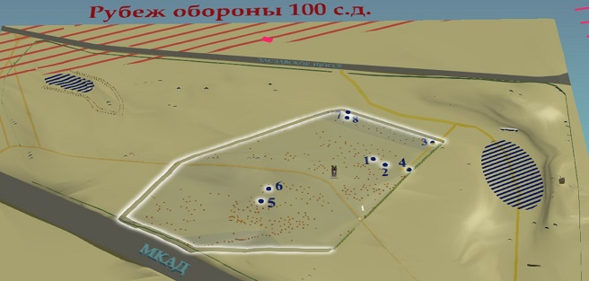
Место массовых расстрелов выделено подсвеченным контуром, с восточной
стороны ограниченно остатками забора. Оранжевыми точками обозначены
предполагаемые места захоронений, цифрами обозначены захоронения
эксгумированные следствием Г. Тарнавского. Статья З. Позняка и Е. Шмыгалева послужила основанием для возбуждения прокуратурой БССР 14 июня 1988 года уголовного дела,
которое возглавил последний Прокурор БССР Г. Тарнавский. За основу были приняты путанные свидетельские показания, подтасовки, наиболее важные факты
и улики были проигнорированы, о чём впоследствии признавался сам Г. Тарнавский. В 1998 году Генеральный прокурор Республики Беларусь
О. А. Божелко признал следствие Г. Тарнавского несостоятельным( См. раздел "Структура фальсификаций"). Тем не менее
московское издательство «Юридическая литература» в 1990 году выпустило книгу «Г. Тарнавский, В. Соболев,
Е. Горелик. Куропаты: следствие продолжается» тиражом сто тысяч экземпляров. Эта книга основана на изысканиях З. Позняка, стала одной
из самых результативных фальсификаций столетия и сыграла важную роль в развале Советского Союза. Правительство США высоко оценило услуги
З. Позняка, незамедлительно представило ему гражданство и назначило солидную пенсию. Выводы одиозного следствия Г. Тарнавского
опровергнуты в книге А. Смолянко. « Куропаты: гибель фальшивки.» вышедшей в Минске в 2011 году.
В рамках следствия Г. Тарнавского было определено несколько сотен углублений, как предполагаемые места захоронений, из
которых были обследованы, по непонятным причинам только 8. В шести из них были обнаружены останки 356 человек, а в двух ( номера 4
и 7 ) останков не было обнаружено[2]. Раскопки проводились до 2001года, было обнаружено еще 11 погребений.
Конфессиональная принадлежность жертв
Большая часть населения Беларуси до войны носила нательные крестики, которые имели и католики, и православные. Отличалась только их
форма, по которой можно было однозначно определить конфессиональное соотношение расстрелянных жертв. В отчёте З. Позняка[3] вообще нет
упоминаний о каких бы то ни было крестиках. Единственными ориентирами в данном вопросе могут служить найденные три католических медальона:
«Раскоп(пахаваньне) № 5. Адзін мэдальён з ланцужком. На двух праглядаецца выява Маці Боскай (?), на трэцім – фігура сьвятога ў промнях,
манаграма зь літарай«M» і крыжам, надпісам лацінскімі літарамі». Среди 356 найденных останков расстрелянных людей предположительно только
три были католиками. И ни одного православного! Католиков меньше сотой от общего количества! В [6] в подтверждение репрессий НКВД нет никаких
доказательств! 99,2 % жертв, найденных в ходе раскопок на холме у Зелёного Луга, – евреи! Это нельзя объяснить никакими репрессиями НКВД!
Распределение по возрастам
О гитлеровских расстрелах в Куропатах свидетельствует определение судебно-медицинской экспертизой возраста
захороненных там людей. Подробный анализ полученных результатов приведён в книге А. Смолянко «Куропаты: гибель
фальшивки».
Таблица 1. Возраст расстрелянных на
холме у Зелёного Луга.
Возрастная группа
возраст
количество
Распределение по возрастным группам
до 40 лет
20-29 лет
28 чел. (6,5 %)
21,6 %
30-39 лет
71 чел. (15,5 %)
40 лет и старше
40-49 лет
226 чел. (49,5 %)
78,4 %
50-60 лет
132 чел. (28,9 %)
Таблица 2. Возраст расстрелянных
органами НКВД.[12]
Возрастная группа
возраст
количество
Распределение по возрастным группам
до 40 лет
20-29 лет
31 чел. (6,8 %)
43,8 %
30-39 лет
169 чел. (37 %)
40 лет и старше
40-49 лет
164 чел. (35,9 %)
56,2 %
50-60 лет
93 чел. (20,3 %)
В таблице 1 видно резкое преобладание в захоронениях людей старше 40 лет.
В начальный период Великой Отечественной войны фашисты в первую очередь уничтожали людей старшего возраста,
а в группе людей до 40 лет истреблению подлежали больные, слабые, неблагонадёжные, остальные должны
были использоваться для рабского труда. Поэтому в захоронениях на холме у Зелёного Луга
преобладают расстрелянные старше 40 лет. Максимум расстрелянных органами НКВД лиц приходится в почти
равном количестве на два возрастных контингента: 30–39 лет – 37 % и 40–49 лет – 35,9 % (таблица 2), то есть признаков
расстрела людей по возрастному принципу здесь нет[4].
Черепа и кости
Из заключения комплексной судебно-медицинской и криминалистической экспертизы: «Всего исследовано 311 черепов и их фрагментов,
извлечённых из всех шести захоронений. На 222 выявлены огнестрельные повреждения, которые характеризуются наличием дефекта ткани, круглой
или овальной формы, диаметром около 7–9 мм, формой усечённого конуса в толще костной ткани, наложением меди и свинца по краям повреждений,
установленным при спектрографическом исследовании. На 188 черепах и их фрагментах выявлено по одному входному огнестрельному отверстию,
на 29 черепах – по два входных отверстия и на 5 черепах – по три входных огнестрельных отверстия. В 192 случаях выстрелы были произведены
в затылок, в 26 – в висок (правый или левый)[5].
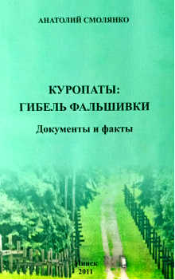
Обложка книги А. Смолянко.
Эксперты констатировали, что повреждения на черепах и их фрагментах причинены пулями, в состав оболочки которых входит медь.
Используемый для расстрелов малокалиберный револьвер Смирнского выпускался под обычный малокалиберный патрон калибра 5,6 мм, который имел
пулю без оболочки. При выстреле в затылок её кинетической энергии было достаточно, чтобы гарантированно убить человека. Обладая
экспансивным свойством, то есть сплющиванием, пуля, попадая в голову человека, деформировалась и существенно увеличивалась в диаметре,
повышая поражающую способность. Вместе с тем уменьшалась и глубина её проникновения, в результате чего пуля оставалась внутри черепа, не в
состоянии пробить выходное отверстие. Далее в выводах указывается, что «установить в данном случае калибр оружия, из которого были
произведены выстрелы, можно только ориентировочно: 7,0–7,65 мм». Указанный интервал калибра пули исключает использование для приведения в
исполнение приговора малокалиберного револьвера. Таким образом, вышеуказанные две части вывода доказывают, что в "Куропатах" расстрелы
производились не из малокалиберного револьвера Смирнского, который НКВД использовал для расстрелов.
Далее указывается, что количество повреждений, их направление и относительное расположение свидетельствуют о том, что они причинены
одиночными выстрелами. Г. Тарнавский указывает что, как утверждают свидетели, большинство сотрудников комендатуры НКВД БССР были
вооружены наганами. Приговоры в исполнение они, якобы, приводили двумя способами: или усаживали арестованных по краям могилы и стрелял сверху,
как правило, в темя, или подходили вплотную к стоявшему спиной к нему арестованному и посылали пулю в затылок снизу вверх. Поэтому на
черепах, как отмечают эксперты, множество выходных отверстий расположено в «лобной части»[6].
Но откуда на 29 черепах взялись по два входных отверстия? Ведь согласно выводам экспертизы стреляли одиночными выстрелами, а не очередями.
Практически невозможно произвести повторный выстрел в голову падающего мёртвого человека, а откуда на полудесятке черепов взялись
по три входных огнестрельных отверстия? Откуда у 26 человек взялись входные отверстия в виске?
И ,наконец, как, согласно объяснению прокурора Г. Тарнавского, умерли 89 оставшихся человек вообще без пулевых отверстий в черепе?
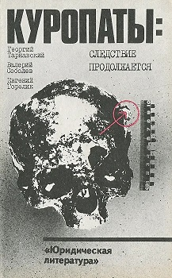
Обложка книги Г. Тарнавского.
Их что, сотрудники НКВД руками душили? Или их всё-таки расстреляли немцы из пулемёта? По требование оперативного приказа от 30 июля 1937
года № 00447 приведение смертного приговора в исполнение определялось по указанию наркомов внутренних дел, начальников управления
и областных отделов НКВД, а не по желанию непосредственного исполнителя, как этого хотелось бы З. Позняку.
Все приговорённые к высшей мере наказания, должны были быть расстреляны одинаково, никак иначе!
В противовес этому ознакомление со зверствами фашистских карателей и их холуёв из числа латышских, литовских, бандеровских и
БЧБ-коллаборационистов показывает, насколько разнообразными были их методы умерщвления людей! О том, как происходили расстрелы
у немцев можно найти в материалах «Судебный процесс по делу о злодеяниях, совершённых немецко-фашистскими захватчиками в Белорусской ССР».
В показаниях Коха читаем: «…Мы гнали советское население на запад. Было очень много стариков, женщин и детей. Они шли очень
медленно. Поэтому мы выкопали яму, положили их всех в эту яму и только потом из пулемётов расстреляли»[7].
Изверги непрерывно разрабатывали новые способы уничтожения людей. Расстрельный почерк Гесса был уже совсем другим. Он ставил на колени людей и расстреливал их в голову,
в затылок[8]. Из показаний Шматухи: ещё один немецкий палач по фамилии Митман ходил с пистолетом вокруг ямы, которая была наполнена убитыми,
и если кто-то оказывался ещё живым, он их пристреливал[9].
По приезду в Минск Г. Гиммлера, ему сообщили о предстоящей казни за городом «сотни еврейских шпионов и
саботажников». Рейхсфюрер СС решил присутствовать на ней. Картина этого расстрела частично может быть восстановлена
благодаря сохранившимся показаниям на суде начальника личного штаба Г. Гиммлера Карла Вольфа, присутствовавшего
на расстреле. Из них следует, что заключенных ударами принуждали спрыгивать в яму и приказывали лечь на живот, после
чего 8–10 палачей стреляли одновременно в голову или шею, затем следующую партию людей заставляли спрыгивать и ложиться
поверх только что убитых. Раненых, которые подавали признаки жизни, потом достреливали отдельно, стоя на краю ямы
Палачи из первой роты 41-го бандеровского батальона во время расстрела выстраивались в шеренгу, перед ними выводили
несколько жертв, и по команде производился расстрел. В зависимости от соотношения численности палачей и жертв, в головы последних могли
попасть и две, и три пули[10].
Из показаний карателя айнзатцкоманды № 8 Отто Адольфовича Матонога известно, что в месте, где раньше обучались войска
(т. е. в “Куропатах”, – прим. авт.), в августе 1941 года расстреливали из русского станкового пулемета «максим» и личного оружия:
оберштурмфюреры Шенфлюк и Папе, штурмфюрер майор Дирлевангер, лейтенант шуцполиции Динтер, приближённый Небе – Шмидт, гауптштурмфюрер
Гессе, оберштурмфюрер Гарнишмахер[11].
Таким образом, у немцев не существовало никакого стиля казни. Кто как мог организовать расстрельную акцию, так и
расстреливал! Этим и объясняется такое разнообразие повреждённых черепов, найденных в Куропатах Ни З. Позняк, ни Г. Тарнавский не
акцентировали на этом факте внимания. Они не стали объяснять явного противоречия: почему при приведении сотрудниками НКВД смертного
приговора в исполнение в черепах было по два-три входных пулевых отверстия, а то и вообще отсутствовали повреждения черепа.
Косвенным подтверждением сокрытия улик по данному вопросу является отсутствие результатов экспертизы и установления причины смерти
тех, у кого не были огнестрельные ранения черепа.
Иностранные вещи
В ходе проведённых раскопок среди множества вещей личного пользования былщ найдено большое количество маркированных предметов ширпотреба,
произведённые в Польше, Франции, Австрии, Чехословакии, Германии – обувь, зубные щётки, расчёски, посуда и другие. Согласно заключению эксперта:
из 25 обнаруженных в захоронении
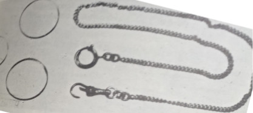
Из книги Г. Тарнавский, В. Соболев, Е. Горелик. Куропаты:
следствие продолжается. Москва, 1990.
№ 5 расчёсок, 18 изготовлены в Австрии, одна – в Польше, одна – в Чехословакии, а из девяти галош три изготовлены в Германии, одна – в Польше, остальные –
также иностранного производства. "Всего внесено в протокол по двум раскопам более 50 предметов ярковыраженного
иностранного производства." [12]. В довоенный период иностранные предметы широкого потребления в СССР не ввозились.
Объяснению обилия иностранных предметов в захоронениях прокурор Тарнавский посвятил отдельную главу на 28 страницах печатного текста.
По его версии владельцами иностранных вещей были перебежчики из Западной Белоруссии, которых сотрудники НКВД расстреливали " в Куропатах ".
А после освобождения в сентябре 1939 года областей Западной Белоруссии, "людей арестовывали, пропускали через конвейерные допросы и, «разоблаченных»,
«сознавшихся» в потенциальном шпионаже или вредительстве, отправляли в минские тюрьмы, откуда, как мы знаем, открывалась прямая дорога
под куропатские сосны"[13]. В действительности же из всего приведенного в главе материала документально подтверждён только один случай вынесения смертного
военным трибуналом БВО перебежчику В. Н. Денисюку 23 июня 1939 года за сбор шпионских сведений о воинских частях и выдаче польской дефензиве
нескольких человек [14].
Примеры, приведённые прокурором Г. Тарнавским только подтверждают, что никаких массовых расстрелов этих перебежчиков
ни в " Куропатах ", ни в других местах не производили. Иностранные вещи принадлежали обречённым на смерть евреям свезёнными гитлеровцами из разных европейских городов!
После возникновения минского гетто, количество его жителей вскоре превысило 80 тысяч человек. Для приёма евреев из Западной
Европы в ноябре 1941 года немцы провели так называемую зачистку местных евреев, отделили колючей проволокой часть территории города – на улицах
Республиканской (сейчас Романовская слобода), Опанского и Шорной и назвали её зондергетто № 1. Зондергетто № 2 было создано между улицами
Кустарной (не сохранилась), Димитрова, Шпалерной, Островского и Немига. Всех прибывающих евреев из западноевропейских стран селили только
в этих двух местах. В уголовном деле бывшего начальника полиции безопасности и СД в Минске оберштурмбанфюрера СС Г. Хойзера (в ведении которого
находился Тростенецкий лагерь смерти) фигурировал график прибытия эшелонов с евреями из разных стран Европы за период 8–28 ноября 1941 года и
за время от 11 мая до 9 октября 1942 года. Станцией назначения был Минск.
Первую партию депортированных 8 ноября 1941 года составляли жители Гамбурга численностью 990 человек: по этой причине всех иностранных
евреев стали называть гамбургскими. Вслед за ними прибывали в Минск всё новые и новые эшелоны с евреями, где их ждало уничтожение:
10 ноября – 993 чел. из Дюссельдорфа;
11 ноября – 1 042 из Франкфурта;
14 ноября – 1 030 из Берлина;
16 ноября – 999 из Брно;
19 ноября – 408 из Гамбурга;
19 ноября – 500 из Бремена;
28 ноября – 1 001 из Вены.
С того времени Минск стал центральным пунктом прибытия и ликвидации евреев, депортированных из Германии и других западных
стран. Сюда эшелонами привозили обречённых на муки и смерть людей из Франции, Польши, Чехословакии, Венгрии, Австрии и Греции.
По официальным данным, с ноября 1941 по октябрь 1942 года, из Западной Европы в Минск было направлено семь транспортов
с евреями из Германии (6 428 чел.), 11 транспортов из Австрии (10 476 чел.) и семь транспортов из Чехии (7 000 чел.). Всего в 25 транспортах
было депортировано 23 904 человека. По последним уточнённым данным израильского учёного Шалома Холявского, в период с ноября 1941 по
октябрь 1942 года из третьего рейха и протектората в Минск депортировали 35 442 еврея.
Как установлено подлинными немецкими документами, по указанию главного управления имперской службы безопасности СД в Минске
осуществляли массовое уничтожение евреев, которых в специальных эшелонах, в каждом по тысяче человек, привозили из разных стран Европы.
Организацию этих операций и их руководство осуществлял непосредственно начальник отдела минского СД Георг Хойзер. Подтверждением этих фактов
служат многочисленные немецкие железнодорожные документы, а также личное распоряжение Хойзера от 21 июля 1942 года, адресованное в главную
железнодорожную дирекцию: «По причинам технического порядка я приказал моему отделению в Барановичах (унтерштурмфюреру СС
Амелюнгу) разгрузить упомянутый поезд с евреями в Барановичах. Прошу дать соответствующие указания железнодорожной дирекции вокзала
Барановичи. Последующие поезда с евреями будут снова приниматься мною в Минске»[15].
Подсудимый унтер-офицер Франц Карл Гесс дал показания, что участвовал в расстреле 2 000 узников минского гетто 10 или 11
декабря 1941 года: «Утром погрузили узников гетто на машины. Чтобы евреи не волновались, им говорили, что везут на работу или же в баню.
Так что люди, которых отправляли на расстрел, не зная о такой цели нацистов, собирали соответствующие вещи с собой в дорогу. На самом деле
их вывозили на то место, где проводили расстрелы»[16].
Иностранные вещи обнаруженные в захоронениях приводят к однозначному выводу о непричастности СССР к массовым расстрелам.
Арест и конвоирование
При аресте органами НКВД граждане в обязательном порядке подвергались тщательному обыску.
Согласно пункту 7 оперативного приказа от 30 июля 1937 года № 00447 «Об операции по репрессированию бывших кулаков,
уголовников и др. антисоветских элементов» обязательному изъятию подлежали: оружие, боеприпасы, военное снаряжение, взрывчатые, отравляющие и
ядовитые вещества, контрреволюционная литература, драгоценные металлы в монетах, слитках и изделиях, иностранная валюту, множительные приборы
и переписка. Затем конвоирование арестованных осуществлялось военнослужащим конвойных войск НКВД в строгом соответствии с требованиями документов
о приёмке осуждённых или подследственных под стражу, их содержании, конвоировании в другие места заключения или к месту исполнения наказания.
Основополагающим документом, регламентирующим действия конвоиров в предвоенные годы, являлся Устав службы конвойных войск НКВД (УСКВ-39).
Тщательный обыск был гарантией того, что арестованный не совершит вооружённого нападения на конвоиров и не попытается
убежать. Это было правилом безопасности и сохранения личной жизни военнослужащих конвойных войск. Во всех случаях приёма заключённых конвой
производил личный досмотр принимаемых и обыск их вещей – с целью обнаружения и изъятия всех предметов, могущих быть использованными при
организации побега и нападении на конвой. Обнаруженные при обыске ценности и деньги в присутствии заключённого сдавали администрации тюрьмы,
которая обязана была немедленно выдать ему квитанцию. Заключённым как тогда, так и сегодня запрещено иметь при себе режущие, пилящие, колющие
и другие предметы, которые можно использовать для подготовки побега. Требования Устава службы конвойных войск НКВД безоговорочно
выполнялось всеми конвойными войсками в СССР. Иначе быть не могло!
Но в отчёте о результатах раскопок указаны предметы, которые органы НКВД должны были изъять ещё на стадии ареста:
«Раскоп (пахаваньне) № 1 Кашалькі, партманэты і іх фрагмэнты – 9 штук…
У заходнім куце на глыбіні 1,35–1,38 м – пустая бутэлька…Выраб жалезны. Брусок выгнуты (25 х 3 см).
Раскоп (пахаваньне) № 2 3 кашалькі. У адным (глыбіня 1,54 м) 4 манэты (даты не чытаюцца), у другім – манэта
і рэшткі папяровых грошай.
2 слупкі манэт ляжалі ў карабку ад запалак (глыбіня 2,10 м; даты ня вызначаны); два кубкі белыя
фарфоравыя на глыбіні 2,05 м (адзін разьбіты).
Раскоп (пахаваньне) № 5 Трапляліся… круглая плястмасавая каробка для зубнога парашку, кубкі. Адшуканыя рэшткі двух
караценькіх завостраных алоўкаў, 3 шлюбныя пярсьцёнкі з жоўтага мэталу…Пры засыпцы пахаваньня знойдзена
лязовая частка брытвы».
З. Позняк и О. В. Иов, пытаясь доказать версию о расстреле органами НКВД людей на зеленолугском холме, старательно перечисляет
вещи, обнаруженные при раскопках. Чаще все они относятся к категории запрещённых в тюрьме: зубной порошок, портмоне, деньги, ремни, шнурки,
кружки, ложки, режущие и колющие предметы, даже часть сабли, патроны и охотничье снаряжение, капсюли для охотничьих патронов, шрапнель[17].
Все эти вещи ни при каких условиях не могли быть у заключённых. Перечень найденного красноречиво указывает на то, что жертвы перед
конвоированием не подвергались обыску. Но такого в конвойных войсках НКВД просто не могло быть! Вывод один: этих людей конвоировали и
расстреливали не органы НКВД.
НКВД и Гулливеры
Следствие установило рост погибших, за исключением нескольких десятков человек кости которых были сильно разрушены.
Таблица3. Данные из материалов следствия
Рост (в см)
к-во человек
161-165
34
166-170
42
171-175
59
176-180
11
181-185
4
Эти данные приведены в таблице 3. Из таблицы видно, распределение роста погибших соответствует нормальному статистическому закону распределения
с математическим ожиданием около 170 см. Это говорит об однородном составе исследуемой группы людей и распределение размеров обуви у этих людей,
также должно соответствовать нормальному статистическому закону распределения. Но почти вся обнаруженная мужская обувь была 43-45го размеров.
В рамках гипотезы вины Советского Союза за массовые расстрелы объяснить этот факт было невозможно. Чтобы спасти версию о зверствах НКВД прокурор
Г. Тарнавский привлёк эксперта В. Я. Дащинского и тот всё объяснил в солженицынском стиле — в СССР иметь высокий рост было смертельно опасно:
"Не мог я не обратить внимания и на такую особенность: мужская обувь сплошь 43-45-го размеров, несколько экземпляров даже сорок восьмого.
Крепкие, могучие мужчины шли под нож «сталинской гильотины»"[18] с.174.
Реальное объяснение можно найти в воспоминаниях ветеранов подпольщиков. Зима 1941-1942 года была очень холодной. Фашисты
конфисковали у евреев минского гетто всю тёплую одежду и обувь для нужд фронта. Чтобы не погибнуть от холода узники использовали резиновую или
самодельную обувь большого размера, для утепления набивали в свободное пространство ветошь, бумагу и всё что могло служить хоть каким-то
утеплителем. Кроме того, оккупанты использовали евреев как рабскую рабочую силу на военнных и гражданских предприятиях. Участники еврейского
сопротивления использовали обувь увеличенного размера для выноса из охраняемой зоны деталей вооружения, продуктов, медикаментов.[19].
Манипуляции следствия Г. Тарнавского с подковой
"В июле 1988 года из захоронения №1 была извлечена «металлическая подкова-набойка к сапогу» — так она значится в
протоколе эксгумации останков. (Дело № 39, том 1, пункт 33). Подкова была отправлена на экспертизу. А в томе 4, где собраны данные
экспертизы, на стр.19, пункт 8 указано, что эта набойка «состоит из двух кожаных полос, скрепленных между собой гвоздевым способом,
и является частью каблука». На прилагаемой фотографии действительно видны следы деревянных гвоздей. Спрашивается, каким образом
металлическая подкова на каблук сапога по пути на экспертизу превратилась в кожаную подковообразную прокладку? Мы неоднократно обращали
на это внимание следователей, но всякий раз встречали с их стороны нежелание заниматься этим вопросом, мол, его это не касается,
произошла ошибка и т.п. Ошибка? Но разве могут опытные следователи и археологи подковообразную полоску гнилой кожи, сплошь пробитую
деревянными гвоздями, спутать с металлом? Понятно это превращение металла в кожу. Все дело в том, что металлические подковы на весь
периметр каблука изготовлялись в Германии накануне и во время второй мировой войны для набивки на солдатские сапоги и ботинки.
На территории Беларуси они появились только с приходом оккупантов. Вот фальсификаторам, проводившим эксгумацию в 1988 г.,
и понадобилось уничтожить эту красноречивую улику, свидетельствующую, что при расстрелах людей в Куропатах присутствовали фашистские
солдаты. Мы требовали расследовать этот обман и привлечь виновных к ответственности. Но где там!"[7]с.143-144.
Литература:
1. З. Пазняк и Е. Шмыгалев «Курапаты – дарога сьмерці» / «Літаратура і мастацтва», 03.06.1988.
2. Г. Тарнавский, В. Соболев, Е. Горелик. Куропаты: следствие продолжается. Москва, 1990.
3. З. Пазьняк, Я. Шмыгалёў, М. Крывальцэвіч, А. Іоў. Курапаты. Артыкулы, навуковая справаздача, фотаздымкі.
Мн., НВТ «Тэхналогія», 1994.
4. А. Смолянко. Куропаты: гибель фальшивки. Минск, 2011. с.117-119
5. Г. Тарнавский, В. Соболев, Е. Горелик. Куропаты: следствие продолжается. Москва, 1990.c.242
6. Г. Тарнавский, В. Соболев, Е. Горелик. Куропаты: следствие продолжается. Москва, 1990.c.245
7. Судебный процесс по делу о злодеяниях, совершённых немецкофашистскими захватчиками в Белорусской ССР (15–29
января 1946 года), Минск, 1947. с. 143.
8. Там же, с.181
9. Там же, с.141
10. 6. НА РБ, ф. 1450, оп. 2, д. 1299, л. 66об.
11. НА РБ, ф. 1440, оп. 3, д. 918, л. 120–121.
12. Г. Тарнавский, В. Соболев, Е. Горелик. Куропаты: следствие продолжается. Москва, 1990.с.200-201
13. Там же, с.228
14. Там же, с.210
15. НА РБ, ф. 1440, оп. 3, д. 961, л. 15–16.
16. Судебный процесс по делу о злодеяниях, совершённых немецко-фашистскими захватчиками в Белорусской ССР (15–19 января 1946 г.).
Госполитиздат БССР, Минск, 1947. с. 175–179.
17. Курапаты. Зборнік матэрыялаў. Мінск, 2002. с. 27–35.
18. Г. Тарнавский, В. Соболев, Е. Горелик. Куропаты: следствие продолжается. Москва, 1990. с.174.
19. Государства Центральной и Восточной Европы в исторической перспективе: сборник научных статей, УО ˮПолесский
государственный университет“, Пинск 25 февраля 2022 г. / Министерство образования Республики Беларусь.
Под редакцией канд. ист. наук, доц. Р. Гагуа;
редкол.: В.И. Дунай [и др.]. – Пинск : ПолесГУ, 2022. – Вып. 6. с. 309
20. А. Смолянко. Куропаты: гибель фальшивки. Минск, 2011. с.143-144.
Монеты
Во время проведения археологических исследований чаще всего найденные монеты оказываются носителями наиболее интересной информации.
Поэтому для начала рассмотрим, как и какие монеты были найдены в ходе раскопок и какие при этом были сделаны выводы. В захоронении № 1 были найдены:
« 1. Кашалькі, партманэты і іх фрагмэнты – 9 штук, у 4, магчыма, ёсьць манэты. (Падчас раскопак кашалькі не адкрывалі, каб не пашкодзіць.)
2. 6 манэт – 2 трохкапеечныя (1933 і 1935 гг.) і 4 – 20-капеечныя (1931, 1932, 1933 і ? гг.)».
Многие вещи, в том числе монеты, были отправлены на экспертизу: «Пасьля распрацоўкі раскопу рэшткі касьцей і абутку пахаваных,
не забраныя на экспэртызу, пакладзены ў траншэю на дне пахавальнай ямы і засыпаны».
На основании этих находок З. Позняк сделал вывод о времени произведённого захоронения: «Мяркуючы па агледжаных знаходках (манэты, галёшы),
пахаваньне зроблена не раней за 1936 г. (манэты ў кашальках не дасьледаваліся)». После проведённой экспертизы
остальные монеты, найденные в кошельках, и содержимое портмоне по непонятным причинам уже больше не фигурируют в качестве аргумента для
доказательства времени расстрела!
Ещё более интересной находкой стали монеты при раскопке захоронения № 2. В отчёте указывается: «3 кашалькі. У адным (глыбіня
1,54 м) 4 манэты ( даты не чытаюцца ), у другім – манэта і рэшткі папяровых грошай. 2 слупкі манэт ляжалі ў карабку ад запалак
(глыбіня 2,10 м; даты ня вызначаны )»[15].
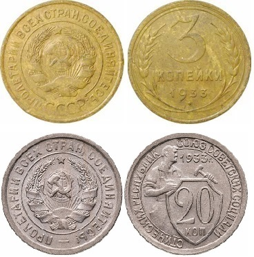
Советские монеты.
Итак, в распоряжении З. Позняк имелись две стопки монет, лежащие в коробке от спичек. Любой интересующийся нумизматикой человек
без труда сможет по внешнему виду определить, какому государству принадлежит монета и прочитать её год. Однако автором исследования этого
не сделал. Почему-то в данном случае З. Позняк не стал на основании монет определять крайнюю дату захоронения и не указал страну их происхождения.
Интересно сравнить, как эти же находки описывали Г. Тарнавский, В. Соболев, Е. Горелик в своей книге «Куропаты: следствие
продолжается»:
«Шесть кошельков... Спичечный коробок с монетами. Точное количество монет не установлено во избежание разрушения
коробка…»[1]. Книга Г. Тарнавского увидела свет в 1990 году, после того как были проведены все надлежащие экспертизы. Но вместо
содержимого уже не трёх, а шести (!) кошельков, найденных в раскопе № 2, стоит многоточие. Также осталось тайной и содержимое спичечного
коробка и всех найденных портмоне. Трудно назвать эти действия иначе, как умышленным сокрытием вещественных доказательств!
В раскопе № 3 монет найдено не было. В раскопе № 5 найдены в портмоне бумажные деньги, но в отчёте они почему-то
не идентифицированы! Не раскрывая кошельков, автор делает некорректный вывод о времени захоронения только по гравировке найденного кольца.
Таким образом, найдя монеты, подтверждающие необходимую дату захоронения, З. Позняк ссылался на них. В остальных случаях почему-то монеты
перестают служить источником информации и их наличие среди находок полностью игнорируется. Почему он не стал их использовать в качестве
источника ценной информации? Почему написал «даты не чытаюцца» и «даты ня вызначаны»?
Для ответа на данный вопрос необходимо обратиться к находкам, найденным в раскопе № 1. Там перечисляются мелкие
советские монеты 1930-х годов. Их состояние позволило однозначно определить номинал, дату и страну чеканки. Все раскопки захоронений
проводились в компактном месте, соответственно время и условия нахождения монет под землёй были практически идентичные. Будь там найдены
ещё советские монеты, то они имели бы приблизительно такую же сохранность, как и в раскопе № 1, то есть достаточную для идентификации страны
чеканки, даты и номинала.
В случае польских монет на холме у Зелёного Луга можно с уверенностью утверждать, что они точно так же были бы однозначно
идентифицированы потому, что монеты номиналом 10, 5 и 2 злотых в Польше чеканились из серебра; 1 злотый, 50, 20 и 10 грошей – из никеля
(нержавеющего, устойчивого к природной среде металла, обладающего магнитными свойствами). В отличие от серебра, монеты из никеля со временем
даже не чернеют. 1, 2 и 5 грошей – из сплава на основе меди. Со временем они темнеют, покрываясь патиной, но коррозия их не разрушает.
Немецкие 5 и 2 марки чеканились из серебра, а мелкие рейхс-пфенниги – из жёлтого сплава на основе меди (медь-олово-цинк или медь-алюминий).
Эти монеты также могут лежать в земле долгое время, сохраняя свой рельеф. Из всех известных на то время монет только пфенниги для
оккупационных территорий в 1940–1944 годах чеканились из цинка – очень активного металла, способного легко окисляться в любой агрессивной
среде, в том числе во влажном воздухе. Указав в отчёте: «даты не чытаюцца» и «даты ня вызначаны», З. Позняк
тем самым фактически указал, что это были немецкие пфенниги для оккупационных территорий, чеканившиеся в 1940–1944 годах, которые появились у
нас вскоре после прихода оккупантов в 1941-м.
О времени их появления можно узнать из документов Национального архива Республики Беларусь. Согласно приказу комендатуры
стационарного лагеря(шталага) № 352 (Лесного лагеря) от 10 сентября 1941 года: «Немецкие монеты в 1 и 2 пфеннига, а также алюминиево-бронзовые
монеты в 5 и 10 пфеннигов можно заменить в казначействе. Вместо этих будут выдаваться цинковые монеты. В русской местности могут быть в обороте
наряду с национальной валютой и кредитными кассовыми чеками ещё только цинковые монеты. Другие платежные средства на русской территории не
должны выдаваться»[2].
По поводу умолчания о достоинстве и годе чеканки остальных монет можно сказать, что они, вероятнее всего, просто не вписывались
в концепцию расстрела людей в тех захоронениях сотрудниками НКВД, и были датированы военным временем либо принадлежали оккупантам.
Делая выводы о времени формирования захоронения, З. Позняк указал, что «мяркуючы па агледжаных знаходках (манэты, галёшы), пахаваньне
зроблена не раней за 1936 г.». Дальше он в выводах не пошёл, поскольку прочее находилось за гранью концепции расстрела жертв в Куропатах органами
НКВД. Он умолчал, до какого времени на оккупированной немцами территории были в ходу советские деньги. Умолчали об этом и эксперты.
Согласно приказу комендатуры стационарного лагеря (шталага) № 352 (Лесного лагеря) от 2 декабря 1941 года: «Средство платежа… только
имперские кредитные знаки и рубли. Служащим подразделения в последний раз даётся возможность обменять до 10 декабря 1941 года все имеющиеся у них
имперские банкноты и банковые чеки в казначействе на имперские кредитные знаки»[3].
Советские монеты оставались платежным средством на оккупированной
территории до конца марта 1942 года, когда немцы стали их выкупать наравне с другими медными монетами.
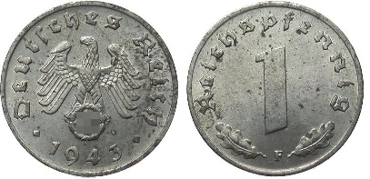
Цинковый пфенитнг.
События разворачивались в соответствии с приказом комендатуры шталага № 352 от 23 марта 1942 года об изъятии из употребления медных
монет: «По постановлению имперского министерства финансов 10 февраля 1942 по 1 марта 1942 года изъять из обращения медные монеты следующих
нарицательных стоимостей:
1 и 2 пфеннига;
1 и 2 реетовых пфеннига;
1 и 2 имперских пфеннига;
1 и 2 гроша австрийской валюты;
100 и 200 крон австрийской валюты.
…Все имеющиеся в наличии у служащих стационарного лагеря и тральского батальона 332 медные монеты подлежат обмену самое позднее до 10 апреля 1942
года»[4]. В отношении сбора и отправки советских монет рейхскомиссаром Остланд в Риге 11 марта 1942 года было подписано отдельное распоряжение:
«На основании распоряжения г-на Рейхсминистра оккупированных восточных областей, вся имеющая хождение русская звонкая монета от одной до 20 копеек
включительно, должна изыматься и переправляться на специальные сборные пункты. Изъятие должно производиться непосредственно у населения всеми кассами
торговых предприятий; государственные кредитные кассы компенсируют номинальную стоимость монет денежными оккупационными знаками. Господин Рейхсминистр
надеется, что это мероприятие будет закончено до конца текущего месяца…»[5].
Таким образом, советские монеты были в свободном обращении до конца марта 1942 года. Остальные советские деньги оставались официальным
платёжным средством на оккупированной немцами территории вплоть до её освобождения. За одну немецкую марку давали 10 советских рублей.
В донесениях разведчиков, относящихся к концу 1942 – началу 1943 года, цены на рынке в Минске и зарплаты указывались всегда
в советских рублях. Например: «Хлеб – 1 пуд – 1 200 р., сало – 1 кг – 800 р., масло – 1 кг – 800 р., мясо – 1 кг – 350 р., сахар – 1 кг – 450 р.,
картофель – 1 пуд – 200 р., соль – 1 кг – 200 р., яички – 10 шт. – 150 р., сапоги – 5 000 р., костюм среднего качества – 7 000 р.»[6] и так далее.
Местное население так и не привыкло к новой валюте. Исходя из проведённого анализа найденных в захоронениях монет, кошельков и портмоне, мы понимаем,
что создавая концепцию о массовых расстрелах людей в Куропатах органами НКВД, З. Позняк и его единомышленники активно использовали для этих целей сокрытие
вещественных доказательств. Фактически полностью отсутствует информация о содержимом всех кошельков, портмоне и спичечного коробка. Также необходимо
внести поправку в определение времени формирования захоронения по найденным советским монетам, а именно указать крайнюю дату временного интервала:
с 1936-го по март 1942 года.
Золото, платина, драгоценности.
" В захоронениях были обнаружены искусственные зубы, пломбы, коронки, мосты. Они были выполнены из золота, а также из сплавов,
состоящих из таких драгоценных металлов, как платина, серебро, палладий… Заведующий кафедрой ортопедической стоматологии Минского медицинского
института профессор Л. С. Величко провел экспертизу и сделал вот такое заключение: «Изготовление пломб по выполненной методике в общедоступных
стоматологических учреждениях не применялось в СССР и не применяется в настоящее время. Этот факт дает право думать, что пломбы изготовлены
за рубежом или в спецучреждениях нашей страны» Этот вывод специалиста никто никогда не предавал гласности. Почему? Понять нетрудно, ибо
убедительно свидетельствует о том, что в захоронениях много иностранцев. Когда же мы спросили Тарнавского, как оказались в захоронениях
иностранцы, то вразумительного ответа не последовало."[9].
В СССР платина широко использоваться в военной промышленности и имела стратегическое значение. Поэтому легально добыть
её было практически невозможно. Использование платино-палладиевых сплавов в зубопротезных целях, было «визитной карточкой» западных
врачей-стоматологов. Поэтому наличие коронок из этих металлов однозначно указывает, что в захоронении были останки очень состоятельных
иностранцев. Вопреки версии З. С. Позняка И Г. Тарнавским о расстрелянных поляках, такие люди с платиновыми коронками нелегально через границу
в СССР на заработки не ходили!
Первые тысячи иностранных и советских евреев, граждан других национальностей в 1941 – в первой
половине 1942 года пали вместе со своей ручной кладью и взятыми в дорогу драгоценными вещами.
Немецко-фашистские захватчики уничтожали евреев, не подвергая их тщательному обыску, а вещи, взятые ими в дорогу,
проверке. Позже гитлеровцы сообразили, что у большинства жертв могут быть изделия из драгоценных металлов. Поэтому
в дальнейшем, прежде чем расстрелять евреев, всем им без исключения приказывали раздеться догола. Одежду складывали
в кучу, а людей уничтожали. Потом пригоняли женщин, как правило, русских и белорусок, и приказывали всю одежду
тщательно перебрать на предмет поиска зашитых золотых вещей. Работу выполняли под присмотром полицаев. Об этом
рассказала бывшая узница фашистского концлагеря Е. Е. Куклис. Более того, евреев, имеющих золотые коронки, начали
пропускать через стоматологические кабинеты, где врач-садист вырывал у них эти изделия. На сей счёт имелось
специальное распоряжение. С 1942 по 1944 год ( не с начала войны ) финансовыми вопросами
имперского комиссариата гауляйтера Лозе в Риге руководил старший правительственный советник, референт по бюджетным
делам в министерстве финансов, начальник отдела финансов в рейхскомиссариате министерства финансов «Остланд» доктор
Фридрих Карл Виалон. 27 августа 1942 года он направил генеральным комиссарам Риги, Каунаса и Минска секретную
директиву «Относительно: управления еврейскими гетто». О порядке использования различных вещей «из поступившего
еврейского имущества», того, которое осталось после расстрелов. Беспокоился он больше всего о выломанных челюстях
с золотыми коронками и других ценностях. Виалон требовал: «…Все золотые и серебряные вещи точно подсчитывать,
описывать и пересылать в моё распоряжение… Копии описей представлять мне»[7].
До сих пор замалчивается , что в ходе проведённых следственных мероприятий в захоронениях были обнаружены
золотые и платиновые изделия, украшения с драгоценными камнями и монеты крупного достоинства. О. В. Иов утверждает, что при
проведении раскопок им были обнаружены 70 изделий из драгоценных металлов общим весом 168,83 грамм[8].
По данным членов Правительственной комиссии по расследованию преступления в урочище, именуемом ныне
"Куропатами", Героя Советского Союза М. Б. Осиповой, писателя И. Г. Чигринова и др. ( всего двенадцать
человек) в ходе эксгумации были извлечены и направлены для проведения экспертиз по уголовному делу
около 3,5 килограмма изделий из золота, платины, драгоценных камней.
Председатель КГБ Э. И. Ширковский подтвердил и такой факт: в шести захоронениях эксгумированных в
этом урочище, установлено было наличие 311 черепов, из которых извлечено 340 золотых зубных протезов[10].
Изделия из драгоценных металлов
имеют маркировку, и специалисты могут установить, в какой стране и какой фирмой они изготовлены.
Результаты экспертизы этих драгоценностей не озвучены до сих пор. М. Б. Осипова, имевшая
высшее юридическое
образование и многолетний опыт работы, обвинила следствие Г. Тарнавского в сокрытии улик.
Об этом же свидетельствует в [11] c.70-78 и [12] член Общественной комиссии по
расследованию преступлений, совершённых на холме возле деревень Цна–Йодково–Зелёный Луг А. Смолянко.
Это же подтверждает член Общественной комиссии, Лепешко Е. Н. [13] .
Вандалы и "чёрные копатели" очень быстро проведали о том, что на холме у Зелёного Луга
в захоронениях есть много предметов из драгоценных металлов. Чтобы пресечь возрастающий поток охотников
за драгоценностями 12 октября 1992 года состоялось совместное заседании членов Общественной и Правительственной
комиссий с участием М. Б. Осиповой, В. П. Корзуна и др., всего двадцать один человек [14]. На
заседании было выработано постановление о необходимости принятия соответствующими органами Республики
Беларусь мер по защите от непрекращающегося мародёрства.
Литература:
1. Г. Тарнавский, В. Соболев, Е. Горелик. Куропаты: следствие продолжается. Москва, 1990. c.111.
2. Национальный архив Республики Беларусь, ф.1440, оп. 3, д. 918, л.15.
3. НА РБ, ф. 1440, оп. 3, д. 918, л. 34.
4. НА РБ, ф. 1440, оп. 3, д. 918, л. 90.
5. НА РБ, ф. 510, оп. 1, д. 7, л. 1.
6. НА РБ, ф. 1450, оп. 2, д. 1299, л. 2.
7. НА РБ, ф. 1440, оп. 3, д. 961, л. 49–50, 103–107. c.71.
8. Іоў А. асноўныя вынікі раскопак 1997 - 1998 гг./ А. В. Іоў / Курапаты : зб. матэрыялаў. Мінск,2002 - С. 27-35.
9. А. Смолянко. Куропаты: гибель фальшивки. Минск, 2011. с. 24.
10. Там же, с.93.
11. Там же, c.70-78.
12. газета «Мiнская праўда» 24 января 1995 г.
13. Лепешко Е. Н. Куропаты: змеиный поцелуй Америки. Минск, Бизнесофсет, 2022.c. 46
14. А. Смолянко. Куропаты: гибель фальшивки. Минск, 2011. с. 162.
15. З. Пазьняк, Я. Шмыгалёў, М. Крывальцэвіч, А. Іоў. Курапаты. Артыкулы, навуковая справаздача, фотаздымкі.
Мн., НВТ «Тэхналогія», 1994.
Расстрельный пистолет.
Кровавые сцены расстрелов, проводившихся в "Куропатах", в публикациях З. Позняка изобилуют большим количеством подробностей,
якобы рассказанных очевидцами. Примеры дикости и зверств сотрудников НКВД, сопоставимые с фашистскими, присутствуют в каждом абзаце
его публикаций. Особенно впечатляют строки о том, как у жертв разлетались кровь и мозги под действием пороховых газов: «У большасьці чарапоў
у лобнай частцы, збоку ці наверсе відаць вялікія, дыямэтрам да 5–6 см і нават больш, ірваныя адтуліны. Гэта выхады куляў. Сьведчаньне таго,
што ствол нагана прыстаўлялі шчыльна да патыліцы. Пры стрэле парахавыя газы пад ціскам ішлі ўсьлед за куляй у чэрап і праз выхадны кулявы
пралом распырсквалі вакол кроў і мазгі… Што шмат было навокал крыві на лісьці і траве». При попадании пули от пистолета в голову человека,
будь то с расстояния метра или пяти, "кроў і мазгі" будут разлетаться одинаково, и пороховые газы к этому не имеют никакого отношения.
З. Позняку захотелось придать научный оттенок материалу исследования, и он блеснул… полным отсутствием знаний в этой области.
Но в выше приведённом фрагменте кровавой вакханалии важна сама суть – почерк убийства. О чём говорят «вялікія, дыямэтрам да 5–6 см і нават
больш, ірваныя адтуліны»? Подобное возможно при расстреле из мощных пистолетов типа револьвера калибра 7,62 мм или ТТ, возможно, винтовок
или пулемётов. Только в одном случае удалось найти в черепе пулю! «Раскоп № 1 10 куляў, некаторыя дэфармаваныя, 1 – усярэдзіне чэрапа».
Все эти пули были непосредственной причиной смерти людей, и непонятно, почему автор отчёта халатно отнёсся к их идентификации и изучению.
По сути – проигнорировал вещественные доказательства. Нет указания ни на калибр пуль, ни на принадлежность к образцу пистолета. Самой ценной
находкой здесь является единственная пуля, найденная в самом черепе, вероятно, калибр пули, отличался от используемого органами НКВД и поэтому
отсутствуют данные о её экспертизе.
Главный вопрос – почерк расстрела людей органами НКВД. Официальный нормативный документ Министерства обороны СССР – «Наставление по стрелковому делу.
Револьвер обр. 1895 г. и пистолет обр. 1933 г.» (Издание исправленное. Военное издательство Министерства обороны Союза ССР. Москва, 1955.):
«Для тренировочных целей в 30-е годы выпускался наган калибра 5,6 мм, под обычный малокалиберный патрон. Малокалиберный наган имел
точно такую же конструкцию, что и револьвер калибра 7,62 мм. В оперативной практике малокалиберный наган использовался для поражения противника
в руку, ногу, плечо при необходимости взять его живым. Использовался он и для расстрелов – малокалиберные патроны дешевле боевых».
В 1927–1928 годах объём их производства на Тульском оружейном заводе составлял 0,55 % от общего выпуска револьверов системы Нагана.
Только в 1930 году ТОЗ выпустил немногим более 2 000 5,6-мм револьверов, известных как системы Нагана–Смирнского. Их изготавливали вплоть
до 1939-го. Всего было выпущено примерно 3 500 этих револьверов. Малокалиберная пуля этого пистолета при выстреле в голову гарантированно
убивала человека. Но её кинетической энергии было недостаточно, чтобы разнести жертве череп. Человек умирал с небольшим отверстием в голове,
при этом пуля оставалась внутри черепа. Как правило, расстрелы производили не в открытой местности, а в местах содержания заключённых.
Так что малокалиберный пистолет исключал возможность, чтобы «праз выхадны кулявы пралом распырсквалі вакол кроў і мазгі». Тихий звук
выстрела скрывал от заключённых факт расстрела, а после него не нужно было отмывать стены от крови и менять песок в камере.
Не располагая никакой информацией об особенностях расстрела органами НКВД, З. Позняк просто посчитал, что это делалось точно так же,
как при немцах во время оккупации. К разочарованию сторонников кровавых оргий НКВД и забрызганных стен мозгами жертв расстрела, их
извращённые ожидания не оправдались. Произведя раскопки множества захоронений, З. Позняк так и не нашёл ни одного черепа жертвы,
расстрелянной почерком НКВД. К тому же, все найденные улики только подтверждают обратное: расстрелы производили оккупанты и их
прислужники в годы Великой Отечественной войны!
О чём говрят пули и гильзы ?
При проведении раскопок были найдены гильзы:
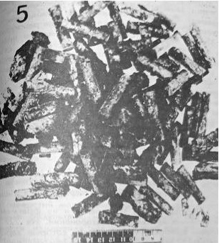
Фото из книги Г. Тарнавского « Раскоп № 1 …3. 10 куляў, некаторыя дэфармаваныя, 1 – усярэдзіне чэрапа. …9. Гільзы ад савецкага нагана.
Раскоп № 5 У паўднёва-ўсходнім куце раскопу ў межах пахаваньня адшукана больш за 80 аднатыповых гільзаў ад нагана ».
В первом случае речь идёт о гильзах от советских наганов, а во втором просто от наганов. Револьверы системы Нагана
до войны были на вооружении у большинства стран Европы. При идентификации пистолетных гильз эксперты-криминалисты не стали
кривить душой и не захотели идти против совести, подгоняя факты под нужный результат, а написали то, что написали.
А это значит, что люди в захоронении № 5 были расстреляны из иностранных револьверов.
Откуда у сотрудников НКВД могли быть иностранные пистолеты? Иногда награждали наиболее отличившийся средний и
старший командный состав иностранным оружием. Но в этом случае возникает вопрос: откуда к личному наградному пистолету брались
коробками иностранные боеприпасы, которые в то время СССР закупал за валюту? Почему для выполнения приказа о приведении в исполнение
приговора к высшей мере наказания использовалось личное оружие?
Приведение приговора в исполнение органами НКВД было строго регламентировано. Об этом гласит выдержка из оперативного приказа от
30 июля 1937 года № 00447 «Об операции по репрессированию бывших кулаков, уголовников и др. антисоветских элементов», подписанного
Народным комиссаром внутренних дел СССР Н. И. Ежовым. Именно этот документ положил начало кровавым репрессиям в СССР и БССР:
«Приговоры по первой категории приводятся в исполнение в местах и порядком по указанию наркомов внутренних дел, начальников управления
и областных отделов НКВД с обязательным полным сохранением в тайне времени и места приведения приговора в исполнение».
Как видно из приказа, порядок приведения смертного приговора в исполнение определялся по указанию наркомов внутренних дел,
начальников управления и областных отделов НКВД. И это был приказ, который подлежал неукоснительному выполнению! Понятно, что все люди,
закончившие жизнь от пули НКВД, должны быть расстреляны одинаково, никак иначе. При этом должно было быть обеспечено сохранение тайны
о времени и месте приведения приговора в исполнение. В любом случае на основании приговора должен быть приказ(приказание, распоряжение или
указание) о получении боеприпасов со склада для табельного оружия. Потому что других боеприпасов на складе быть не должно. Применить личное
наградное иностранное оружие в таком случае невозможно!
Получить в награду именной пистолет могли лишь представители командного состава за подвиги или большие заслуги.
В основном это были старшие командиры, занимавшие высокие должности, которым по статусу заниматься «черновой работой» было не положено. Поэтому
иностранные наградные пистолеты они с гордостью носили как символ доблести и мужества с нетронутым боекомплектом патронов.
Но если допустить, что средний и старший командный состав участвовал в расстреле со своими наградными пистолетами, то
почему не найдены гильзы от пистолета Тульский, Коровина, образца 1926 года? Пистолеты ТК поступали на вооружение
сотрудников НКВД, среднего и старшего командного состава Красной Армии, государственных служащих и партийных работников с 1926 по
1935 годы. Они были наиболее распространённым подарочным или наградным оружием. Почему же при раскопках
захоронений З. Поняком не найдены ни гильзы, ни пули, застрявшие в черепах жертв, от пистолетов ТК, которые в то время часто использовали
в качестве наградных?
Как ни парадоксально это звучит, но опровержение домыслов З. Позняка относительно гильз иностранного производства имеется в книге
Г. Тарнавского! Он приводит показания свидетелей, которые в 1930-е годы служили в НКВД. Из показаний А. Знака, бывшего надзирателя внутренней
тюрьмы НКВД: «Я выдавал сотрудникам оружие и боеприпасы к нему. В частности, работники комендатуры, как правило, пользовались
револьверами «Наган». Хорошо помню, что такое оружие было у Бочкова, Абрамчика, Кобы, Острейко, Мигно, Дубровского... По их словам, этим
оружием они расстреливали приговорённых к смертной казни «врагов народа» [1]. Это же утверждает бывший вахтёр комендатуры НКВД
С. Захаров[1], свидетели Н. А. Михайлашев[2] и И. М. Стельмах[3],
в довоенные годы служившие в органах НКВД БССР. Ни о каких других пистолетах и импортных боеприпасах к ним в показаниях свидетелей речи не было.
В итоге последующих расследований, кроме гильз от нагана, были обнаружены гильзы стандартного патрона 6,35 мм импортного производства
для пистолетов систем «Маузер-С», «Браунинг», а также «Вальтер», который состоял на вооружении немецкой армии. По итогам баллистических
экспертиз во время первого следствия (1988 г.) о «Вальтере» просто как бы забыли, указав его в заключении как «другое оружие». Зато первые
два пистолета (под такой же стандартный патрон) встречались в РККА и теоретически могли принадлежать комсоставу НКВД: поэтому факт был
широко раскручен в прессе, чтобы объяснить появление иностранных патронов и подтвердить энкавэдэшный след. Однако данная версия напрочь
отметается существующими в то время нормативными документами и приказами. Приведённые выше результаты анализа указывают на полную
несостоятельность подобных домыслов. Поэтому предположение, что у представителей расстрельной команды как бы случайно оказались личные немецкие
пистолеты и немецкие патроны, звучит абсурдно. Версия об использовании сотрудниками НКВД иностранных подарочных пистолетов не выдерживает
никакой критики. Далее З. Позняк писал: «Знойдзена каля дзьвюх сотняў гільзаў ад рэвальвэра сыстэмы «Наган» і адна ад пісталета ТТ».
Могут ли найденные при раскопках гильзы от советского револьвера системы Нагана и ТТ служить доказательством
расстрела людей органами НКВД?
В годы войны трофейные польские и советские револьверы системы Нагана поступали на вооружение вспомогательных и охранно-полицейских
формирований оккупантов. Ими были вооружены: полиция «генерал-губернаторства», отдельные подразделения войск СС, «восточные» формирования
вермахта и подразделения вспомогательной полиции на оккупированной территории СССР. В вермахте пистолеты Токарева состояли на вооружении в
качестве оружия ограниченного стандарта под обозначением Pistole 615 (r) и имелись в основном в тыловых и охранных частях вермахта и полиции.
Пистолеты ТТ, наряду с другими образцами советского стрелкового оружия, использовали в действовавших на стороне Третьего рейха русских
национальных армиях РОНА, 1-й РНА, Русском корпусе и ВС КОНР, а также в состоящих из славян и казаков различных формированиях войск СС.
Поэтому даже наличие в захоронении гильз от советских пистолетов системы Нагана и ТТ не даёт полной гарантии, что это стреляли сотрудники НКВД!
Могут ли найденные в большом количестве гильзы быть доказательством того, что это стреляли органы НКВД? Обратимся к нормативному
документу «Наставление по стрелковому делу РККА. Книга 1. Оружие стрелкового взвода».
Наставления подобного рода являются официальным документом для обучения личного состава обращению с оружием, которое издаёт Министерство обороны.
В соответствии с пунктом 151, «по окончании стрельбы смены командир взвода проверяет оружие, не осталось ли патронов в магазине
или патроннике, приказывает собрать гильзы, осечки и неизрасходованные патроны для сдачи их старшине роты. Старшина роты в тот же день
отчитывается в полученных им патронах»[4].
Требование сдавать стреляные гильзы диктовалось, в первую очередь, необходимостью строгой отчётности за каждый выданный патрон.
В отличие от ТТ все стреляные револьверные гильзы оставались в барабане оружия и никуда самопроизвольно не вылетали. Конструктивно револьвер
сделан так, что каждую гильзу в отдельности необходимо выталкивать из барабана шомполом. Поэтому ситуация, когда в советское время после
стрельбы кто-то достанет из барабана гильзы и вместо того, чтобы сдать их на пункт боепитания (старшине) или на склад, просто выбросит в яму
с расстрелянными людьми, представляется абсурдом. Можно допустить, что далеко отлетевшую в сторону гильзу от ТТ могли случайно затоптать
в землю, а потом не найти. Но это единичные случаи.
Только в условиях военного времени и ведения боевых действий патроны списывают по упрощённой схеме. Поэтому большое количество
стреляных револьверных гильз в захоронении является прямым
доказательством того, что расстрел был произведён не в мирное время, соответственно, не органами НКВД.
Анализ найденных гильз по годам изготовления.
Распределение найденных в ходе следствия гильз по годам изготовления представлено в таблице 4 [5].
Таблица 4. Данные из материалов следствия
Год выпуска
1921
1924
1927
1928
1929
1930
1931
1932
1933
1934
1935
1936
1937
1938
1939
Количество найденных гильз шт.
–
–
–
3
2
6
13
1
12
6
9
1
8
–
74
Количество расстрелянных в г. Минске чел.[6]
1
1
3
1
1
нет дынных
1
4
10
нет дынных
нет дынных
нет дынных
533
637
1
Апогей казней приходится на 1937–1938 годы, а подавляющее большинство найденных на месте расстрелов гильз произведены в 1939году.
Вот и получается, что органы НКВД в 1937 и 1938 годах – на пике массовых репрессий – расстреливали людей патронами, изготовленными
в 1939-м. Дальше, как говорится, ехать некуда! Не в состоянии опровергнуть эти упрямые факты, фальсификаторы игнорируют факты, продолжая
бессовестно лгать, утверждая, что расстрелы в "Куропатах" продолжались до лета 1941 года.
Скрытие следствием гильз зарубежного производства.
В своей статье «Куропаты — дорога смерти» З. Позняк проговорился о наличии револьверных гильз калибра 7,5 мм.
Их нашли дети, раскопавшие захоронение, и передали археологам 1 мая 1988 года. Это были Игорь Бага, который на то время окончил школу и
работал каменщиком и ученики 171-й школы Минска Виктор Петрович и Александр Мокрушин[7]. Но, об этом уже не принято
вспоминать — поскольку нельзя показывать людям доказательства преступлений гитлеровских оккупантов.
«Исследовано также 177 гильз и 28 пуль, найденных в захоронениях. Поверхности гильз сильно коррозированы,
оболочки и сердечники пуль окислились. Отдельные части гильз и пуль отсутствуют, некоторые гильзы и пули деформированы,
находятся в полуразрушенном состоянии... Судя по конструктивным особенностям и маркировочным обозначениям,
164 исследуемые гильзы и 21 пуля являются частями револьверных патронов, предназначенных для стрельбы из револьвера системы «Наган».
Одна гильза является частью патрона для пистолета «ТТ» калибра 7,62 мм.
Остальные гильзы и пули сильно коррозированы, и установить их характеристики не представляется возможным» [8].
12 гильз (177–164–1=12) и 7 пуль (28–21=7) официально не были идентифицированы. Эксперты не стали объяснять, почему гильзы,
пролежавшие в земле практически одинаковое время, имели столь различную сохранность. Ведь большинство гильз
сохранилось в таком состоянии, что можно на них прочитать маркировку и определить ряд мелких технических деталей,
например: «на капсюлях вмятины округлой формы диаметром 1,3 мм расположены эксцентрично относительно центра – это след бойка.
На гильзе патрона для пистолета «ТТ» четко отобразился след бойка грушевидной формы».
О чем говорят следы столь сильной коррозии, что невозможно не то, что прочитать маркировку на гильзах, но даже установить
их характеристики? К разочарованию сторонников «кровавых оргий НКВД», это – очередное доказательство преступлений оккупантов
в "Куропатах"! Ведь в довоенное время в СССР гильзы к патронам делали на основании сплавов меди, которые плохо поддавались окислению
и в ходе изготовления боеприпасов при случайном ударе или трении не давали искры, что предохраняло от пожаров или взрывов на предприятии.
Золотистый цвет гильз, изготовленных на основании сплавов меди, сохраняется много десятилетий.
Откуда могли взяться в ходе раскопок сильно коррозированные гильзы? Дело в том, что пистолетные патроны Geco 7,65 D.
(Gustav Genschow & Co. AG) с нержавеющими латунными гильзами выпускали в Германии только до конца 1940 года.
В 1941-м из-за дефицита цветных металлов немцы перешли на омедненные стальные гильзы, а затем и чисто стальные,
покрываемые серо-зеленым лаком. Омедненные и лакированные гильзы в почве быстро ржавели. Поэтому не удивительно,
что эксперты не смогли, или не захотели определить их принадлежность, поскольку это автоматически подтвердило бы
причастность оккупантов к расстрелу! Вот так в очередной раз в "Куропатах" были замаскированы следы преступлений гитлеровского геноцида!
На холме у Зелёного Луга были найдены гильзы советского образца, среди которых были и немецкие.
Замалчивается факт находки при эксгумации захоронения № 25 в 1998 году гильзы от патрона к немецкой винтовке Маузера калибра 7,92 мм,
состоявшей на вооружении гитлеровской армии. Согласно проведенной экспертизе, гильза изготовлена на одном из заводов Германии в 1936
году для патрона с тяжелой пулей[9].
Наоборот, все найденные на стрелковом полигоне НКВД пули и гильзы ( См. раздел "Аэрофотоснимки") оказались
только советского производства ! До войны на стрелковом полигоне НКВД немцев и коллаборационистов не было.
Они появились после оккупации на холме, в зоне захоронений, где проводили массовые расстрелы.
Советское оружие у палачей.
На холме у Зелёного Луга были обнаружены гильзы и пули советского производства наряду с немецкими. Это неудивительно, так как
советским оружием немцы вооружали литовских, белорусских, украинских, латышских полицаев. Например, на 10 августа 1941-го
года литовская полиция в Риге состояла из 2799 солдат и 174 офицеров. Они были вооружены 983 пистолетами, 2277 русскими
и литовских винтовками[10]. О том, насколько широко было распространено советское трофейное
оружие в полицейских формированиях можно судить из донесений оберштурмфюрера СС Дирлевангера Высшему начальнику СС и полиции
России «Центр»:
« Относительно: боевой структуры зондеркоманды СС. Приданная полиция службы порядка (группа Барчке):
командир, 233 подчиненных.
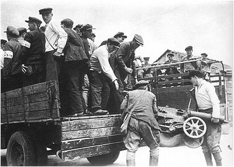
Этих предателей еще не одели в полицейскую форму,
зато вооружили винтовками и советским пулеметом
«Максим». Они поедут на операцию против партизан
и мирного населения .
Вооружение:
1 противотанковое орудие калибра 4,5 см.,
17 ручных пулеметов (русских),
6 станковых пулеметов, 180 винтовок, 20 пистолетов (русских)[11].
Приданные украинцы: 1 командир и 53 подчиненных
Вооружение:
16 ручных пулеметов, 45 винтовок (русских) и 10 пистолетов (русских).
Командир зондеркоманды СС. »[12]
Зондеркоманда СС Дирлевангера
« Высшему начальнику СС и полиции России «Центр». Сообщение к пункту 4:
235 винтовок, из них 60 немецких и 175 русских
10 оптических ружей
4 автоматические русские винтовки (трофейные)
5 ручных пулеметов (чешские), 5 ручных пулеметов 34, 6 русские (трофейные).
4 станковые пулемета русские (трофейные)
15 пистолетов, 65, 14 пистолетов (чешские) 8 мм.
11 трофейных русских пистолетов
2 ракетницы
2 легких миномета (трофейные)».[13]
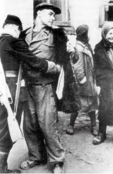
У полицая советская
винтовка.
Литература:
1. Г. Тарнавский, В. Соболев, Е. Горелик. Куропаты: следствие продолжается. Москва, 1990. с. 232–233.
2. Там же, с. 260.
3. Там же, с. 240.
4. Наставление по стрелковому делу РККА. Книга 1. Оружие стрелкового взвода. Государственное военное издательство, 1936. С 70.
5. Г. Тарнавский, В. Соболев, Е. Горелик. Куропаты: следствие продолжается. Москва, 1990.c. 245.
6. Вечерний Минск. 1994, 31 марта.
7. Г. Тарнавский, В. Соболев, Е. Горелик. Куропаты: следствие продолжается. Москва, 1990. с. 27-29.
8. Там же, с. 243-244
9. А. Смолянко. Куропаты: гибель фальшивки. Минск, 2011. с. 122.
10. «В рейхкомиссариате Остланд» Берлин. 1998г.
11. НА РБ, ф. 1440, оп. 3, д. 930, л. 30
12. НА РБ, ф. 1440, оп. 3, д. 930, л. 30
13. НА РБ, ф. 1440, оп. 3, д. 930, л. 32-33
100-я стрелковая дивизия вступает в бой.
Непреодолимым заслоном для фальсификаторов стал подвиг 100-й ордена Ленина стрелковой дивизии, они нигде и никогда не
упоминают, что через мифический старый бор, где якобы за трёх-метровым забором органы НКВД расстреливали людей, в конце июне 1941 года
проходила линия обороны дивизии.
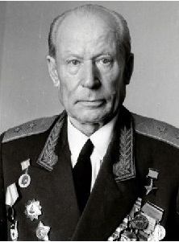
Руссиянов И. Н. ( 1900 - 1984 )
Ветеран, профессор Константин Антонович Кvлинкович, находившийся в конце июня 1941 года в Минске свидетельствовал:
«100-я ордена Ленина стрелковая дивизия вела тяжелые оборонительные бои с немцами на главенствующих высотах от Уручья, 9-й километр,
Боровая, урочище, получившее ныне название "Куропаты", и до реки Цна. На всей этой оборонительной линии были вырыты окопы, траншеи и блиндажи.»
[1].
Пока был жив Герой Советского Союза генерал-лейтенант И. Н. Руссиянов никакие фальсификации были невозможны. Только после его смерти,
в эпоху тотального развала именуемого перестройкой, могла появиться куропатская фальшивка. Всё дело в том, что Иван Никитич Руссиянов с августа 1940
года был командиром 100-й ордена Ленина стрелковой дивизии, входившей в состав Белорусского Особого военного округа, преобразованного после начала войны
в Западный фронт. Дивизия участвовала в освобождении Западной Белоруссии, в присоединении Бессарабии и Северной Буковины,
за отвагу и мужество, проявленные личным составом в ходе прорыва линии Маннергейма соединение было награждено Орденом Ленина. Перед войной
дивизия дислоцировалась в районе деревни Уручье, под Минском.
Утром 22 июня 1941 года генерал-майор И.Н. Руссиянов получил приказ генерала армии Павлова занять круговую оборону
Минска. Войска дивизии были расположены вокруг Минска. 331-й стрелковый полк занимал рубеж обороны фронтом на север: Жуков Луг, х. Кляпуха,
Пос. Готище, Цнянка, Зацень имея все батальоны в одном эшелоне на широком фронте ( Схема 1). Для охраны штаба фронта в районе хутора
Боровое из состава 331-го стрелкового полка были вызваны батальон с батареей 81-го отдельного противотанкового дивизиона
и шестью бронемашинами 69-го отдельного разведывательного батальона ( Схема 2). В вечером 25 июня 331-й стрелковый полк получил приказ
выдвинутся на север. К 14 часам 26 июня полк готовил оборонительный рубеж по линии Карниз-Болото, свх. Первого Мая, Дроздова,
Цна-Иодково. Вечером 27 июня 331-й стрелковый полк вместе с другими частями дивизии провёл успешную контратаку, он не только разгромил противника в
своей полосе наступления, но и захватил штаб 25-го танкового полка. «Среди убитых оказался и сам командир полка полковник Ротенбург. Из захваченных
документов штаба полка стало известно, что Ротенбург пообещал своему фюреру первым войти в Минск и под это обещание авансом получил
Железный крест.»[2]. ( Из данных немецких источников следует, что бедолага Ротенбург был ранен в бою с частями НКВД, а при эвакуации в тыловой госпиталь
угодил под удар отчаянных руссияновцев и был убит.)
Подразделения охранявшие штаб фронта, в том числе 3-й батальон 331-го стрелкового полка оставались на месте.
В штабе Западного фронта с первого дня войны находились заместитель наркома обороны СССР Маршал Советского Союза Б. М. Шапошников, первый секретарь
ЦК КП(б) Белоруссии П. К. Пономаренко, генерал армии Д. Г. Павлов [3],[5]. Разведка противника установила расположение штаба Западного фронта, на немецком
аэрофотоснимке конца июня 1941 года штаб обозначен красным цветом. Немцы выбросили в тыл 100-й дивизии парашютный
десант, как раз в районе современных раскопок на холме у колхоза Зелёный Луг, рассчитывая повторить успех десантной операции по захвату
бельгийского форта Эбен-Эмаль и недавний успех десанта, захватившего Острошицкий Городок. Если бы фашистам удалось захватить штаб Западного фронта,
то фронт мгновенно рассыпался, трудно представить размер последовавшей катастрофы.
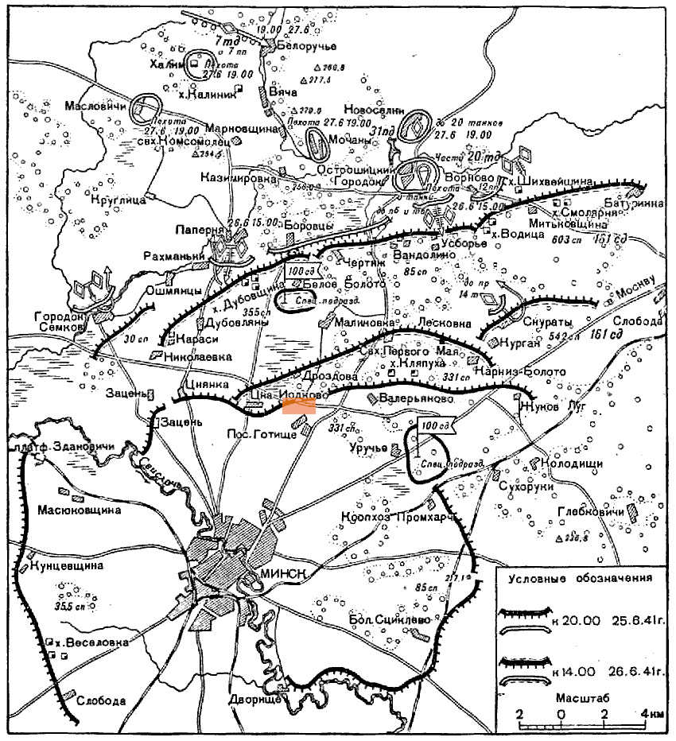
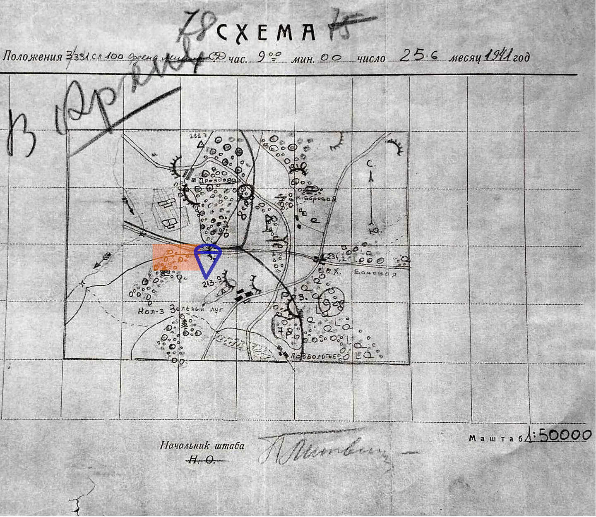
В выделенном прямоугольнике поросль леса, а не «стары бор»!
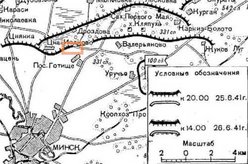
Схема 1. Из журнала о боевых действиях 100-й стрелковой дивизии.
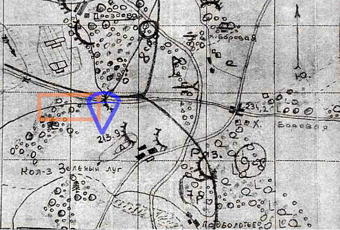
Схема 2 Из Центрального архива Министерства обороны РФ.
К счастью, в 100-й ордена Ленина стрелковой дивизии служили не бельгийцы. Накануне войны в дивизии
непрерывно шло « повышение стрелковой культуры ... Проводились также стрельбы из винтовок и ручных пулеметов по воздушным
целям отделением, взводом, группой.» [4] . Когда началась война, при возведении оборонительных рубежей
все позиции тщательно маскировались. Немцы не смогли выявить замаскированные позиции 331-го стрелкового полка, десант угодил
в зону ответственности 3-го батальона под меткие пули красноармейцев и был уничтожен. Генерал-майор Руссиянов доложил в том
числе и об уничтожении 331-ым стрелковым полком до роты парашютистов [6] . Уничтожение немецкого десанта 3-им батальоном
331-го стрелкового полка подтверждают и пули, найденные при раскопках, проведенных в 2011 году в ходе предварительного осмотра
места перспективного строительства логистического склада СП ОАО «Спартак».
Фотодокументы из 100-й ордена Ленина стрелковой дивизии.
В расположении 331-го стрелкового полка с 26 июня находился один из создателей фотолетописи Великой Отечественной войны
военный фотокорреспондент Василий Иванович Аркашев. 25 июня он из отпуска вернулся к месту службы в Минск « Город горел. В небе
кружились фашистские самолёты...дымились развалины ... на другой же день ( 26 июня — прим. ВНО ) получил задание выехать в полки
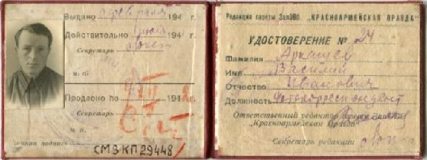
Аркашев В. И. бои за Минск
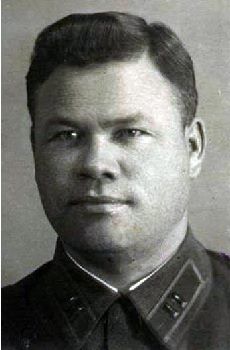
полковник Бушуев И. В.
Сотой дивизии. Они занимали тогда оборону северо-западнее Минска. Ехал на попутной машине. Навстречу – нескончаемый
поток беженцев.». Массовые расстрелы в такой обстановке мог себе вообразить только националист-фальсификатор
З. Позняк.
«Красноармейцы встретили неприветливо: моя "лейка" и штатский костюм вызывали подозрение. Хорошо, что
командир 331-го стрелкового полка Иван Владимирович Бушуев знал меня раньше. Он помог мне, и я, не мешкая, принялся
за работу.»[7],[8]. ( Полковник Бушуев И. В. умер 04.07. 1941г. от ран полученных в боях за Минск . — прим. ВНО ).
Негативы снимков которые сделал военный корреспондент В. И. Аркашев в 100-й стрелковой дивизии в июне 1941 года хранятся
в Белорусском государственном архиве кинофотофонодокументов (БГАКФФД). Фотоснимок 0-135270 IDномер : F0205036 из
коллекции БГАКФФД сделан 26 июня 1941 года как раз в одном из подразделений 331-го стрелкового полка. Аннотация к фотоснимку:
Пулемётчики 331-го стрелкового полка 100-й стрелковой дивизии Западного фронта маскируют огневую позицию перед боем.
В Кратких итогах и выводах из боев за Минск, составленных 17 сентября 1941 г. помощником начальника оперативного отдела
штаба 2-го стрелкового корпуса капитаном Гараном указывалось, что «тыловые органы и штабы с первых дней боёв начали
правильно маскироваться, передвигаться по дорогам мелкими группами, чем уменьшали свои потери»[9]. Благодаря хорошей
маскировке красноармейцами своих позиций и принятым организационным мерам на аэрофотоснимках нет никаких признаков
присутствия подразделений 100-й стрелковой дивизии. Поэтому немецкая разведка не смогла своевременно вскрыть
расположение дивизии.
Оборонительные рубежи 331-го стрелкового полка 100-й стрелковой дивизии с 22 июня,
до перехода 26-27 июня полком в контратаку, проходили в районе так называемых " Куропат ", прямо через ,якобы, свежие
захоронения " жертв массовых расстрелов органами НКВД ". Недавние следы массовых убийств невозможно было бы скрыть от участников
боёв. Этого никогда не могло быть!
За проявленный героизм личного состава, приказом наркома обороны СССР И. В. Сталина № 308
от 18 сентября 1941 года, 100-я ордена Ленина стрелковая дивизия была преобразована в 1-ю гвардейскую, славный боевой
путь начатый в этих местах гвардейцы завершили в победном 1945 году в боях за Вену.
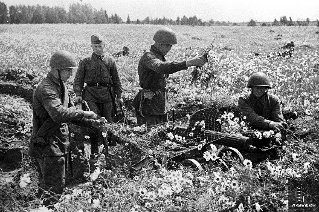
Фотоснимок 0-135270 ID номер : F0205036 из коллекции В. И. Аркашева в БГАКФФД
Литература:
1. А. Смолянко. Куропаты: гибель фальшивки. Минск, 2011 с.54 .
2. Руссиянов И. Н. В боях рожденная... — М.: Воениздат, 1982. с.42 .
3. Там же, с. 16
4. Там же, с.9-11
5. Солдатами были все. Минск : Беларусь, 1968. с.22-25
6. Командиру 2-го стрелкового корпуса о боевых действиях 100-й ордена Ленина стрелковой дивизии за период с 26 по 28 июня 1941 г.
7. Франтавымі дарогамі: Фотаальбом / В.І.Аркашоў. - Мн. : Беларусь, 1969. с.3-4
8. Мы встречались в бою: [книга воспоминаний фотокорреспондента фронтовой печати] / В. И. Аркашев. - Минск : Беларусь, 1974. с.7.
9. Из журнала боевых действий 2-го стрелкового корпуса о боевых действиях 100-й стрелковой дивизии за период с 25 по 28 июня 1941 г.].
Доказательство фашистских массовых расстрелов на аэрофотоснимках.
В настоящее время достоверно установлено, что массовые расстрелы производились на холме и прилегающих склонах. На Схеме 1
зона массовых расстрелов ограничена затемнённым многоугольником. В пределах этой зоны по данным плана, составленным Институтом истории Национальной
академии наук Беларуси, находится около 370 предпологаемых захоронений жертв массовых расстрелов. Каждое предпологаемое захоронение это яма-углубление.
Размеры этих ям-впадин согласно [1] составляют 2 х 3; 3 х 3; 4 х 4; 6 х 8 метров. На Схеме 1 они обзначены красными подсвеченными
точками:
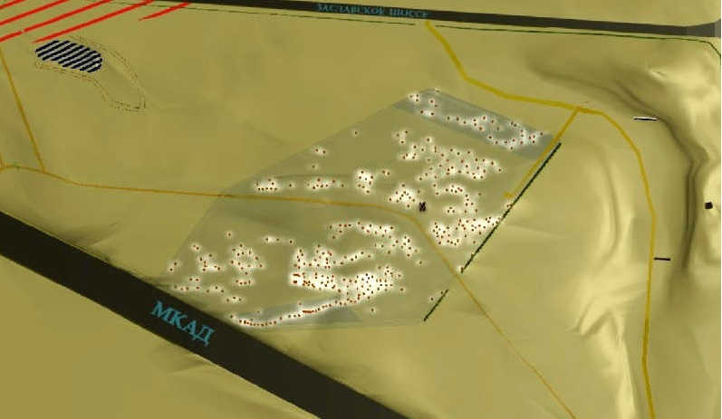
Схема 1. Зона массовых расстрелов.
Так как большое количество ям-углублений распределены на небольшой площади, то они во многих местах сливаются в непрерывные участки
неправильной формы.
В начале 2000-х годов в открытом доступе появились немецкие аэрофотоснимки Минска периода Великой Отечественной
войны из Национального архива США(NARA). Фрагмент аэрофотоснимка, сделанного в 1941 году в первые дни войны
для разведки местности , когда немцы бомбили Минск представлен на Фото 1( из частной коллекции Павла Ростовцева). На нём зона массовых расстрелов
обведена синим шестиугольником. Если ли бы " теория " З. Позняка о кровавых оргиях НКВД была верна, то всё пространство внутри синего шестиугольника
на немецком аэрофотоснимке должно быть заполнено следами захоронений, выкорчеванных или спиленых кустарников и молодых деревьев, свежевыкопанных ям
большого размера, примерно в засвеченных местах на Схеме 1. Однако, никаких признаков подобной деятельности НКВД на фото нет! Нет ничего, что могло
бы указать на присутствие массовых захоронений!:
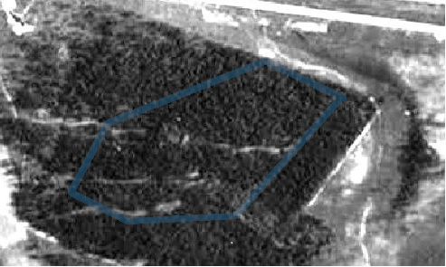
Фото 1. Фрагмент немецкого аэрофотоснимка, конец июня 1941 года.
Зона массовых расстрелов выделена синим многоугольником. Нет никаких следов НКВД!. На фрагменте немецкого аэрофотоснимка сделанным 7 февраля 1942 года (Фото 2) зона массовых расстрелов также обведена синим шестиугольником.
В границах обведенного синего шестиугольника в зоне массовых захоронений растительность уже вырублена. Это неопровержимо доказывает, что захоронения
могли появится только после июня 1941 года, во время нацистской оккупации!:
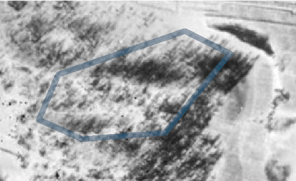
Фото 2. Фрагмент немецкого аэрофотоснимка, 7 февраля 1942 года.
Зона массовых расстрелов выделена синим многоугольником. Захоронения появились при гитлеровцах! Немецкие аэрофотоснимки подтверждают непричастность Советского Союза к проведению расстрелов
и доказывают, что массовые казни на холме у Зелёного Луга проводились во время немецко-фашистской оккупации !!!
На месте "сасновага бора" и "дорогі сьмерці" был стрелковый полигон.
Согласно учению З.Позняка более четырёх лет подряд по «дороге смерти» сотрудники НКВД ежедневно по три раза на день возили «за забор»
расстреливать заключённых[2]. Однако никакого леса за забором в то время не было. Более того, на этой территории не было найдено никаких
массовых захоронений.
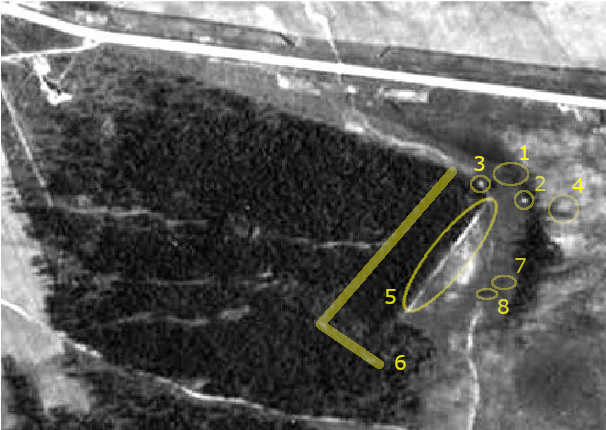
Фото 3. Стрелковый полигон.
В этом месте в 1991 году члены Общественной комиссии во время осмотра в районе заброшенного «хмызняка» увидели следы
стрелкового тира. Они обратились к военным специалистам и те подтвердили: тир. Об этом написали в газете «Во славу Родины» 31 июля 1991 года.
Тогда министерство обороны на запрос дало ответ, что в документах военного ведомства ПОСЛЕВОЕННЫЙ ТИР в том месте не значится [3].
В то время людей всячески пытались убедить в бредовости предположений членов Общественной комиссии, что в этом месте до войны проходили занятия
по боевой подготовке с военнослужащими, а не расстрелы.
Понадобилось десять лет, чтобы по настоянию председателя Общественной комиссии В. П. Корзуна в 1998 году следователи
провели исследование этой территории. Солдаты копнули в том месте, где по предположению членов общественной комиссии должен был находиться
пулеулавливатель. Сразу же вместе с грунтом на лопате оказалось 45 пуль, преимущественно винтовочных.
На немецком аэрофотоснимке конца июня 1941 года видно, что в лесу , где «за забором» якобы расстреливали людей и проходила
" дорогі сьмерці ", до войны находился стрелковый полигон. 1 - стрелковая ниша, сохранилась до настоящего времени (см аннотацию правой кнопкой мыши к мишенной нише 3d карте).
2 - место руководителя занятий, пункт выдачи боеприпасов, сдачи гильз.
3 - пост дневального при въезде на стрельбище.
4 - домик охранника стрельбища.
5 - забор, ограждающий стрельбище.
6 - тропа патруля.
7 - 100м стрелковый рубеж.
8 - 120м исходный рубеж ( окоп и землянка для выдачи боеприпасов ).
Наличие учебного полигона и расположенного на его территории стрелкового тира дают совсем другое объяснение дневным,
вечерним и ночным приездам машин с людьми в форме НКВД и регулярной стрельбе на протяжении более четырёх лет, о которых вспоминали жители окрестных
деревень: «Слышали, как стреляют». Позняку осталось только немного подкорректировать свидетельские показания, заменив по смыслу слова «стреляли» на
«расстреливали».
Векового "Куропатского леса" не было, его выдумал З. Позняк.
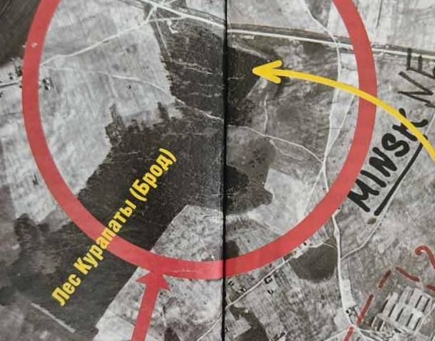
Сфальсифицированный лес Брод.
Фальсификаторы утверждают, что Куропаты были одной из советских спецзон, созданных для казней, захоронений расстрелянных
и представляло собой поросший лесом холм, что НКВД проводил массовые расстрелы на холме " у старым векавым бору", "... на месте массовых
захоронений лес стоял и до войны, и во время неё, и после"[1]. Анализ картографических материалов начала двадцатого века, двадцатых и
тридцатых годов прошлого столетия, а также немецких азрофотоснимков полностью опровергает ложь фальсификаторов. Об отсутствии "старога бору на куропатском холме" заявляли свидетели [4],[5], дендрохронологическая экспертиза,
проведенной в 1988 году, следов деревьев довоенного возраста не обнаружила [6]. На карте генерального штаба 1908 (Карта 1.)
"старога векавога бора" нет, а есть только небольшой участок леса который примыкал к холму с восточной стороны.
Такой вид местность сохраняла во время Первой мировой войны и после неё. На польской карте 1933 года (Карта 2.) между деревнями Цна-Иодково и Готище
(Зеленый Луг) виден все тот же небольшой участок леса по своей форме чем-то напоминающий ботинок с острым носком, повернутый в восточном
направлении. Но на вершине холма ни кустарника, ни леса не обозначено.
На советской карте 1933 года этого участка леса, прилегающего к дороге уже нет – его вырубили. На карте появилась уже и
строящаяся шоссейная дорога в направлении Заславля, обозначенная, в отличие от других дорог, штрихами.
Советские картографы уточнили параметры кустарника (Карта 3.), который был обозначен на польской карте 1933 года и изобразили его в виде
кустарника и леса с порослью, указав наличие преобладающих в нем хвойных пород деревьев. При этом добавили к нему территорию так называемых
Куропат. Точки и сгущение кружков на контуре леса делались для лучшего выделения опушки, и не означают наличие леса. Согласно топографии
того времени, лес от кустарника отличался высотой заросли. Если заросль выше 4 метров, то она называется лесом, а если ниже – кустарником [7].
Отсутствие перед войной "в Куропатах старога бору" подтверждает и схема расположения лесов Минского лесхоза (Карта 4.).
Это не просто схема всех лесничеств, а наглядный документ учёта лесных угодий. Каждый пронумерованный в ней участок леса имел своё описание,
исходя из которого проводилось планирование выделения древесины для нужд народного хозяйства, доводились нормы вырубки тому или иному лесничеству.
Тот факт, что на схеме не обозначен лесной массив, в так называемых Куропатах, указывает на то, что на этом месте вся промышленная древесина уже
была вырублена и участок больше не стоял на балансе лесхоза [8]. В начале 30-х годов, приблизительно с 1933 году, никакого
«старога бору» здесь уже не было! Обозначенный на Куропатском холме лес по состоянию на 1933 год представлял из себя кустарник высотой выше 4 метров,
не имеющий для лесничества промышленного интереса.
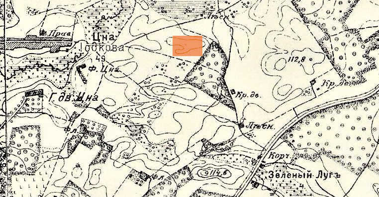
Карта 1. Фрагмент карты генерального штаба 1908 г.
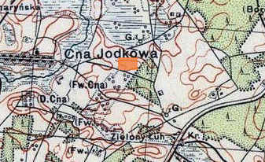
Карта 2. Фрагмент польской карты 1933 г.
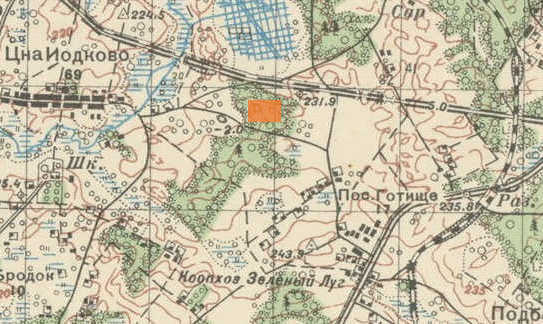
Карта 3. Фрагмент советской карты 1933 г.
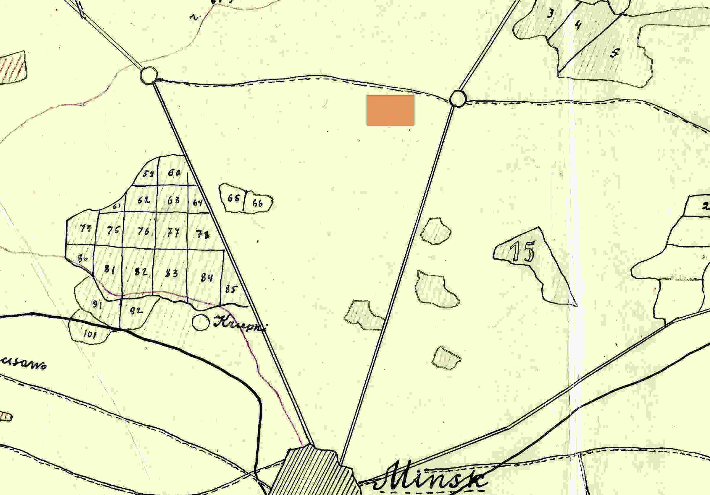
Карта 4. Фрагмент карты Минского лесхоза
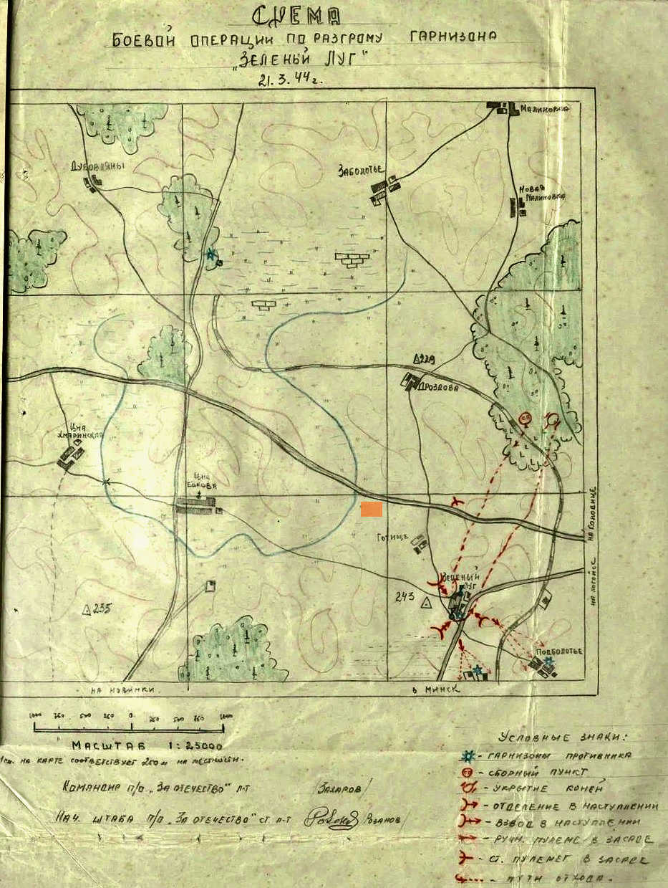
Карта 5. План проведения операции нападения партизанского отряда «За Отечество»
на хозяйство «Зелёный Луг» 21 марта 1944 года
В начале войны на немецких картах контуры зелёной зоны – молодого леса и кустарника в Куропатах оставались без изменений.
После активизации боевых действий партизан все кустарники и деревья вдоль шоссейных и железных дорог были вырублены немцами.
В подтверждение данному факту служит план проведения операции нападения партизанского отряда «За Отечество» на хозяйство «Зелёный Луг»
21 марта 1944 года(Карта 5.). Как следует из данной схемы, ни на территории т. н. Куропат, ни южнее, никакого леса не было [9].
Таким образом в начале 30-х годов лес, расположенный восточнее этого холма (т. е. "Куропат "), вырубают и участок уже не состоит
на учёте в лесхозе. Но произошло чудо: лес снова вырос и уже в 1937 году в нем органы НКВД начинают расстреливать людей и стреляют до самой войны.
В начале войны местные жители опять вырубают в Куропатах «стары бор», якобы выросший меньше, чем за 10 лет. Но свидетель Николай Антонович Нехайчик
указывает, что после войны он ходил в этот лес водил туда своих детей. И в то же время, в 1946 году Иван Загороднюк с заместителем председателя
Минского сельского райисполкома Петром Ивановичем Иваненко проверяли, как минский лесхоз выполнил указания по озеленению придорожных лесополос,
которые были вырублены немцами вдоль шоссейных и железных дорог, в том числе и на Сергеевой горе — ныне называемой "урочищем Куропаты".
Такое возможно только в сказках З. Позняка и в сфальсифицированных результатах следствия Г. Тарнавского.
Немного математики.
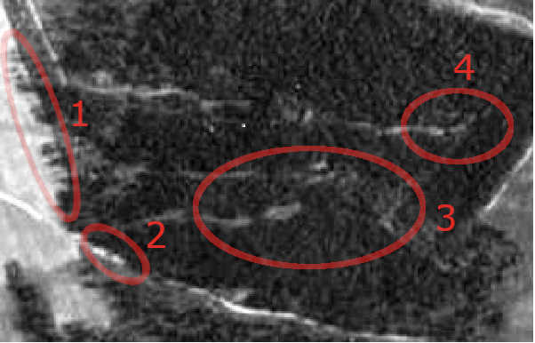
Фото 4. Короткие тени деревьев.
Авторы прилежно учились в советской школе, поэтому смогли по длине теней на аэрофотоснимке конца июня 1941 года (Фото 4)
установить высоту деревьев. В зоне, обозначенной цифрой 1, хорошо видны тени деревьев.
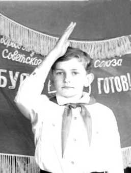
Саша Плавинский
ученик 7 класса
Латыгольской
средней школы
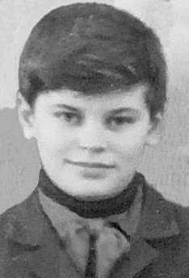
Игорь Марковцов
ученик 7"А" класса
СШ №123 г.Минска
По направлению теней, можно легко определить, что аэрофотоснимок сделан в восемь часов утра. В конце июня в восемь часов утра
длина тени от предмета больше его высоты в 2 раза.
Расстояние на Фото 3 от 100м стрелкового рубежа(7) до стрелковой ниши(1) 74 пикселя. Поэтому размер пикселя на
аэрофотоснимке равен 100 / 74 = 1,35 метра. Таким образом измерив на аэрофотоснимке размер объекта в пикселях, можно
определить его размер в метрах. Наименьшая длина теней деревьев на Фото 4 в зоне 1 равна 12 метров,
а наибольшая не превышает 17,5 метров. По схеме Института истории Национальной академии наук Беларуси в этом месте уклон рельефа 10
градусов, поэтому длина теней в этом месте на аэрофотоснимке увеличена на 17%. Следовательно высота самых низкорослых деревьев в зоне 1
не превышает 4,5 метра, а высота самого крупного дерева не превышает 7 метров. В зонах 2,3,4 по плану Института истории НАНБ наклон рельефа
достигает 30 градусов, поэтому длина теней в этих зонах на фотоснимках укорочена примерно на 50%. С учётом наклона рельефа действительная
длина теней в зонах 2,3,4 не превышала бы 15 метров, а значит высота растительности не превышает 7,5 метра. После войны на холме у Зелёного Луга и
прилегающей территории за несколько десятков лет действительно вырос вековой сосновый бор, высота деревьев в нём 20 - 30 метров,
а есть и более высокие деревья, что превышает в несколько раз высоту растительности конца июня 1941 года. Если бы действительно
существовал вековой сосновый лес, где НКВД проводил массовые расстрелы и захоронения своих жертв, то тени от деревьев на немецком
аэрофотоснимке конца июня 1941 года, в районе массовых захоронений были бы длиннее по крайней мере в 2 - 3 раза!
Анализ аэрофотоснимков, топографических карт и схем с начала ХХ столетия убедительно доказал несостоятельность
позняковской "теории" о расстрелах,
проводимых в "Куропатах" органами НКВД в 1937–1941 годах в "старом бору", который назывался Брод, поскольку в этом месте просто не было
старого бора. Не было леса и в восточной части нынешних "Куропат", поскольку там, после его вырубки располагался песчаный карьер для
строительства Заславской дороги. После того, как дорога была построена и карьер по прямому предназначению перестал использоваться,
органы НКВД его приспособили под учебный полигон.
Литература:
1. Г. Тарнавский, В. Соболев, Е. Горелик. Куропаты: следствие продолжается. Москва, 1990. С. 43.
2. З. Пазняк и Е. Шмыгалев «Курапаты – дарога сьмерці» / «Літаратура і мастацтва», 03.06.1988.
3. А. Смолянко. Куропаты: гибель фальшивки. Минск, 2011.С. 114–115.
4. Г. Тарнавский, В. Соболев, Е. Горелик «Куропаты: следствие продолжается», М. 1990. С. 184-185.
5. И. Загороднюк. Куропаты: идеологическая диверсия // Мінская праўда. 18.07.1995.
6. Г. Тарнавский, В. Соболев, Е. Горелик. Куропаты: следствие продолжается. Москва, 1990. С. 117.
7. В. Шебалин. Военная топография, Воениздат, 1938 г. С. 34.
8. ГАМн, ф. 1024, оп. 1, д. 8а, л. 8.
9. НАРБ, ф. 1405, оп. 1, д. 1040, л. 6.
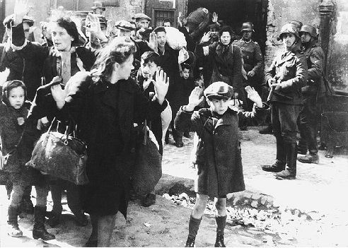
Арест женщин и детей во время восстания в Варшавском гетто
О женщинах.
Символом жестокости сотрудников НКВД в устах З. С. Позняка послужили найденные
в захоронениях останки тел расстрелянных женщин. Из 195 обнаруженных в захоронениях фрагментов
обуви 48 предметов (более 24 %) были когда-то женской обувью. Из заключения комплексной экспертизы:
«Из 130 наиболее сохранившихся черепов из всех шести захоронений по двенадцати определить пол
не представилось возможным в связи с отсутствием отчетливо выраженных признаков полового диморфизма,
разрушением у некоторых из них костей лицевого скелета и отсутствием нижней челюсти. У остальных 118 черепов
установлена следующая половая принадлежность: мужских – 97, женских – 21...» [1].
Эти данные противоречат показаниям бывшего сотрудника НКВД С. Харитоновича, допрошенного
в качестве свидетелей [2]. Он показал, что во внутренней тюрьме НКВД содержались и подвергались казни только мужчины.
Это же подтвердили начальник архивного отдела КГБ полковник В. Дашковский и председатель КГБ генерал Э. Ширковский,
которые сообщили, что с начала 1920-х по начало 1940-х годов в Минской области к высшей мере наказания всеми судебными и внесудебными органами было
приговорено к смерти не более пяти женщин. Достоверно известно, что расстреляна только одна. Большое количество найденных
в захоронении женских тел однозначно указывает на непричастность к их расстрелу органов НКВД.
Расстрелянные дети.
Массово уничтожали мирное население целыми семьями, со стариками, женщинами и детьми только немцы и их пособники в годы Великой
Отечественной войны. Поэтому тела расстрелянных женщин и, тем более, детей неопровержимо определяет происхождения массовых захоронений.
НКВД детей не расстреливал. Массово уничтожали мирное население целыми семьями, со стариками, женщинами и детьми только немцы и их пособники
в годы Великой Отечественной войны.
В перечне найденных в ходе раскопок вещей упоминается «сьлізкая падэшва ад маленькага, ня больш 34 памера, жаночага туфля» [4]
или предмет «похожий на детскую соску» [3], но детская соска – это не расстрелянный ребёнок.
Для поиска расстрелянных детей необходимо обратиться к области криминалистики.
Судебно-медицинские эксперты по описанию цвета костей, найденных в захоронении могут приблизительно определить
время нахождения трупа в земле. На основании химического и прочих методов анализа найденных костей эксперты
делают выводы о возрасте жертвы и времени её смерти:
«Особое значение для экспертизы имеет то, что свою форму, величину, крепость, твердость и структуру сохраняет и неживая кость, т. е.
кость, выделенная из тела, обработанная путем вымачивания, кипячения и последующего высушивания. Благодаря этим свойствам костная ткань
имеет огромное преимущество перед другими объектами биологического происхождения, стойко и длительно противостоя биологическим,
физико-химическим и механическим воздействиям и в силу этого сохраняясь многие десятки, сотни и даже тысячи лет.»[5].
Примеры того, как кости сохраняются сотни и тысячи лет мы постоянно встречаются при описании археологических находок во время раскопок
древних поселений, курганов и т. д.
У новорожденного и детей первых месяцев жизни костная ткань имеет грубоволокнистое строение. Волокна её состоят из отдельных пучков,
переплетающихся между собой, беспорядочно расположенных тонких фибрилл. Костные клетки многочисленны, разнообразной формы. Сосудистые
каналы крупные, за счет чего кость имеет четко выраженный порозный характер строения. Молодая кость богата водой и бедна солями кальция
(у новорожденного костная зола составляет 1/2 веса кости, тогда как у взрослого – 4/5). Одним из существенных свойств молодой кости является
ее малая плотность и значительно выраженная порозность, придающие кости большую упругость и эластичность, малую твердость и хрупкость по
сравнению с костями взрослого человека. Постепенно, начиная примерно от 5 месяцев и до 1,5 лет, грубоволокнистая ткань начинает
замещаться пластинчатой, и к 2,5–3 годам этот процесс полностью заканчивается. Последующее изменение кости связано с её дальнейшим ростом
и перестройкой, заканчивающейся в основном к 18 годам, т. е. к указанному возрасту устанавливается структура, типичная для костей
взрослого молодого человека. После формирования скелета (18–20 лет) процессы роста затихают и постепенно, согласно данным В. И. Добряка (1968),
исчезают, и начинаются явления остеопороза [5].
Следовательно одним из существенных свойств молодых костей является малая твердость и хрупкость по сравнению с костями
взрослого человека, позтому молодые кости в земле разрушаются быстрее.
Описание отбора человеческих останков в ходе раскопок для экспертизы: «Все черепа и кости скелета, пригодные для исследований,
откладываются в сторону, регистрируются, упаковываются в отдельные ящики» [6] указывает на то, что в однотипном
захоронении были и непригодные для исследования черепа и кости скелета. Откуда они взялись, если все люди были расстреляны в одно и то же
время и лежали в земле в одинаковых условиях?
Это объясняет заключение комплексной судебно-медицинской и криминалистической экспертизы :
«Все представленные на исследование кости скелета относительно плотные
(кости черепа ломкие, хрупкие), без мягких тканей, связок и хрящей, обезжиренные, сухие» [7].
Основываясь на материале исследования В. И. Пашкова и Б. Д. Резникова «Судебно-медицинское отождествление личности по костным останкам»
из того, что кости скелета не «плотные», а «относительно плотные», «кости черепа ломкие, хрупкие»
единственный вывод, который можно сделать из приведенного заключения экспертизы состоит в том, речь
идет об останках расстрелянных детей и подростков.
«Степень высыхания» костей.
В книге Г. Тарнавского приведены конкретные цифры: кости выборочно взвешивались, затем погружались на одни сутки в воду и вновь
взвешивались. Установлено, что при этом их вес увеличивался на 40% в сравнении с первоначальным, что свидетельствует о максимальной сухости [7].
Для чего проводился данный анализ? Что дает «максимальная сухость» экспертам? Ведь в конечном итоге на основании проведенного анализа должен
быть ответ, связанный со свойством кости впитывать в себя влагу, выраженный в конкретном значении. И здесь уместно вспомнить, как изменяется
с возрастом содержание минералов в кости: у новорожденного костная зола составляет 1/2 веса кости, тогда как у взрослого – 4/5.
У новорожденного ребенка костная ткань еще во многих местах не заменила хрящевые модели костей. В течение первого года жизни ребенка кости
растут медленно… Молодая кость пронизана густой сетью кровеносных сосудов, она содержит больше воды и органических веществ, чем старая.
У детей относительная масса хрящевой ткани в их скелете намного больше; в суставах не начался процесс отложения солей. С возрастом замедляется
рост кости и связанная с ним перестройка, что приводит к увеличению доли старой, полностью минерализованной и неактивной костной ткани.
Как следует из описания, молодая кость пронизана густой сетью кровеносных сосудов, она содержит больше воды и органических веществ, чем старая.
В [7] Г. Тарнавский при описании проведения экспертизы отмечал, что кость смогла впитать в себя очень много влаги и её вес
увеличился на 40%. Это указывает, что исследуемые кости имели много пустот, оставшихся после разложения густой сети кровеносных сосудов.
При содержании в кости взрослого человека 80% минеральных веществ её вес при погружении в воду в условиях описанного выше эксперимента может
увеличиться максимум на 25%. Учитывая то, что кость новорожденного содержит 50% минеральных веществ, такой же анализ даст увеличение веса в
два раза, на 100%. Исходя из этих цифр, следует вывод, что в данном случае для анализа была взята
кость ребёнка. Более точный их возраст можно определить по специальным таблицам.
Теперь рассмотрим следующий фрагмент из материалов судебно-медицинской экспертизы:
«Установление пола проводилось на основании краниоскопической диагностики по методике, предложенной В. Звягиным ... Из 130 наиболее
сохранившихся черепов из всех шести захоронений по двенадцати определить пол не представилось возможным в связи с отсутствием отчетливо
выраженных признаков полового диморфизма, разрушением у некоторых из них костей лицевого скелета и отсутствием нижней челюсти.
У остальных 118 черепов установлена следующая половая принадлежность: мужских — 97, женских — 21...» [1].
Почему в найденных черепах отсутствовали «отчетливо выраженные признаки полового диморфизма»?
Потому, что расстрелянные люди были далеки до половозрелого возраста, проще говоря дети .
Отличия мужского черепа от женского проявляются прежде всего в форме и характере строения, а также в абсолютных и относительных величинах
как целого черепа, так и отдельных его частей; эти отличия наиболее достоверны у лиц, достигших половой зрелости [8].
После 7—8-летнего возраста, когда включаются в работу половые железы, начинают формироваться различия между мальчиками и девочками в
массивности скелета и других признаках, которые и служат потом для определения пола [9].
Определение пола по костному скелету у лиц, не достигших половой зрелости, представляет значительные трудности, поскольку до этого периода
на костях отсутствуют отчетливо выраженные признаки, характерные для того или иного пола. В период полового созревания и по достижении
его скелет приобретает ряд анатомо-морфологических признаков, свойственных определенному полу [8].
Таким образом, за узко профессиональной фразой «отсутствием отчетливо выраженных признаков полового диморфизма» скрывается смысл,
что исследуемые черепа принадлежали детям.
Разрушение костей лицевого скелета.
Так же возникает вопрос, в следствии чего наступило разрушение костей лицевого скелета? Ведь все тела были захоронены в одно время,
находились в земле в одинаковых условиях, а в итоге у одних кости лицевого скелета сохранились, а у других нет. Это могло произойти
потому что кости были другими, «ломкими, хрупкими» – детскими. Эксперты не дали внятный ответ на этот вопрос, или последний
Прокурор БССР Г. Тарнавский не захотел его озвучить? «Возраст захороненных людей определялся по степени облитерации (зарастания)
стреловидных, венечных, затылочных швов в 130 наиболее сохранившихся черепах… [10]»
Зарастание швов между костями черепа начинается в возрасте 20–30 лет, у мужчин несколько раньше, чем у женщин.
Сагиттальный шов зарастает в возрасте 32–35 лет, венечный – в 24–41 год, ламбдовидный в 26–42 года, сосцевидно-затылочный – в 30–81 год.
Чешуйчатый шов, как правило, не зарастает[11]. И опять – выборочное проведение экспертизы и сомнительный критерий отбора
«наиболее сохранившихся черепов». Если большинство людей было расстреляно выстрелом в затылок, то входное отверстие
будет маленьким и соответствовать калибру пули, а окружающие затылочные швы в таком случае должны остаться неповрежденными, что позволит
беспрепятственно провести экспертизу. Однако этого не произошло и большое количество черепов не было исследовано. Почему не сохранилась
целостность остальных черепов? - Об этом в конце данной главы.
Детские черепа.
В следующем заключении судебно-медицинской экспертизы указывалось:
«В среднем слое пласта кости покрыты черной, слизеобразной, жирной массой. Связки, хрящи, подкожица не определяются. Кости влажные,
черно-бурого цвета. Костная ткань размягчена, на отдельных участках восковой плотности, легко деформируется при нажатии пальцами;
в нижнем слое пласта кости желтовато-коричневого цвета, сохраняют прочность в отличие от обнаруженных в среднем слое.
Кости представлены судебно-медицинским экспертам и эксперту-криминалисту для исследования на месте эксгумации. [12]»
Ни судебно-медицинский эксперт, ни эксперт-криминалист не дали внятного ответа, почему в одной могиле так сильно
разнится состояние костей и почему в верхнем слое «костная ткань размягчена» и «легко деформируется». Опять налицо сокрытие доказательств
о наличие в захоронении расстрелянных детей!
Откровенное описание целого захоронения истреблённых детей приводится путем перечисления специфических свойств костной
ткани детских черепов, но только без использования слова «детские»:
«Следует отметить, что при очистке черепов и их фрагментов от песка костная ткань на большинстве исследуемых объектов по краям огнестрельных
отверстий даже при осторожной обработке кисточкой легко крошится, что делает детальное измерение огнестрельных отверстий малоэффективным и
дает лишь относительные результаты, не соответствующие требуемой точности измерения для установления калибра пули.
На некоторых фрагментах черепов признаки огнестрельных повреждений отсутствуют. Следует учитывать, что они представляют собой мелкие
изолированные части отдельных костей свода и основания черепа (например, части затылочной кости, височной, лобной, теменных и др.).
Эти обломки хрупкие, легко крошатся, что делает невозможным их сопоставление [13].»
Вспомним о том, что черепа взрослых люде способны пролежать в земле и сто, и тысячу, и более лет, сохраняя при этом свои первоначальные
формы и не теряя прочности. В "Куропатах" при очистке черепов и их фрагментов» «по краям огнестрельных отверстий даже при осторожной
обработке кисточкой легко крошится». Очень странные черепа с очень нехарактерными свойствами, если не предположить,
что они принадлежали убитым детям!
Участвовавший в раскопках под прикрытием сотрудник КГБ вспоминал: «...в массовых захоронениях часто встречались детские останки, женские и детские вещи. Даже у
непосвященного человека складывалось впечатление, что это расстреливали мирное население, которое,
видимо, неожиданно, ночью погрузили в машины и привезли убивать всеми семьями, вместе с маленькими
детьми, женщинами и стариками... Мне до сих пор тяжело на душе вспоминать, как мы извлекали эти хрупкие
от времени детские черепа.»[14].
Так убивали детей в Минском гетто.
Черепа, которые не вошли в число «130 наиболее сохранившихся…»[10], взятых для экспертизы, были детскими. Об этом говорят
и «мелкие изолированные части отдельных костей свода и основания черепа (например, части затылочной кости, височной, лобной,
теменных и др.)». Словосочетание «мелкие изолированные части отдельных костей» в материалах следствия используется, чтобы
скрыть факт повреждения черепов, что могло быть следствием удара головой об камень, или об угол дома. Так делали при убийстве детей в Минском
гетто, а распались черепа уже после разложения трупов.
У новорожденного ребенка между костями черепа имеются прослойки соединительной ткани, особенно в широких местах, где сходятся несколько
костей, эти участки получили название родничков – их шесть. Самый крупный родничок передний, или лобный, он расположен там, где соединяются
лобная и теменные кости. Задний, или затылочный, родничок находится в месте схождения теменных и затылочной костей. Клиновидный родничок
виден сбоку в месте соединения лобной, теменной костей и большого крыла клиновидной кости. Сосцевидный родничок расположен в том месте,
где сходятся затылочная, теменная кости и сосцевидный отросток височной кости. Благодаря наличию родничков череп новорожденного очень
эластичен, его форма может изменяться во время прохождения головки плода через родовые пути матери в процессе родов .
Зарастание родничков происходит в определенной последовательности. Передние боковые и затылочный роднички закрываются к моменту рождения
или вскоре после него; задние боковые роднички зарастают на 1–3-м месяце жизни, лобный – на 2-м году, примерно, к 18 месяцам. При
некоторых заболеваниях, в том числе при рахите, гипотиреозе, лобный родничок длительное время (до 2, иногда до 6 и даже до 8 лет) может
оставаться незакрытым. Одновременно с зарастанием родничков, начиная с первою года жизни ребенка, соединительнотканные прослойки,
соединяющие между собой
кости свода черепа, постепенно начинают заменяться швами. На первых порах края покровных костей выглядят в виде волнистых линий и
соединяются между собой тонкой прослойкой соединительной ткани. Здесь возникает так называемый шов – гармония [15].
Чем взрослее ребенок, тем больше прослойки соединительной ткани между костями черепа заменяется швом. При разложении в земле детского
трупа тонкая прослойка соединительной ткани в черепе разлагается вскоре после мягких тканей, в результате чего череп распадается на
отдельные фрагменты. Поэтому многочисленные «мелкие изолированные части отдельных костей свода и основания черепа» указывают, что это
были остатки детских черепов. Разложение соединительной ткани привело к их разрушению. Результат такого разрушения и был обнаружен в виде
отдельных костей детских черепов – «затылочной кости, височной, лобной, теменных и др.»
Плохая сохранность в могилах черепов, обусловлена детским возрастом уничтоженных жертв, а не иными причинами.
Это подтверхдают обобщенные данные по найденным в могилах черепах:
В раскопе номер 1 найдено 47 черепов и их фрагментов;
в раскопе номер 2 – 62 черепа, другие кости скелета и их фрагменты;
в третьем – 31 череп;
в шестом – 35 черепов и фрагментов. Обнаружены также 29 фрагментов нижней челюсти [12]
Как следует из приведенных данных, в раскопах № 2 и № 3 были найдены черепа без их фрагментов, а в раскопах № 1 и № 6 – черепа с фрагментами.
Различие в сохранности черепов налицо!
Защищая Советскую власть, НКВД не расстрелял ни одного ребёнка, тогда
как при раскопках на холме у Зелёного Луга обнаружено массовое захоронение расстрелянных детей, но этот
факт сознательно был скрыт от общественности. Всячески его скрывают и в настоящее время.
Литература:
1. Г. Тарнавский, В. Соболев, Е. Горелик «Куропаты: следствие продолжается», М. 1990. с. 175.
2. Там же, с. 112.
3. Там же, С. 108.
4. З. Пазьняк, Я. Шмыгалёў, М. Крывальцэвіч, А. Іоў. Курапаты. Артыкулы, навуковая справаздача, фотаздымкі. Мн., НВТ «Тэхналогія»,
1994. С. 26.
5. В. И. Пашков, Б. Д. Резников «Судебно-медицинское отождествление личности по костным останкам», издательство Саратовского университета,
1978 г. С. 13-14.
6. Г. Тарнавский, В. Соболев, Е. Горелик «Куропаты: следствие продолжается», М. 1990. с. 106.
7. Там же, с. 115.
8. В.И. Пашков, Б.Д. Резников «Судебно-медицинское отождествление личности по костным останкам», издательство Саратовского университета,
1978 г. С. 63.
9. https://lektsii.org/5-8214.html
10. Г. Тарнавский, В. Соболев, Е. Горелик «Куропаты: следствие продолжается», М. 1990. с. 176.
11. https://studfile.net/preview/2975366/page:6/ Павлова В.И., Мамылина Н.В., Камскова Ю.Г. Анатомо-физиологические и возрастные особенности
костной системы человека: учебно-методическое пособие. Челябинск: изд-во ЧФ УРАО, 2008.
12. Г. Тарнавский, с. 187–188.
13. Там же, с. 243.
14. http://s-kps.by/3304.html/ Завархин Л. С. Про Куропаты, вообще о тех временах и истине…
15. В. И. Пашков, Б. Д. Резников «Судебно-медицинское отождествление личности по костным останкам», издательство Саратовского университета,
1978 г. С. 54.
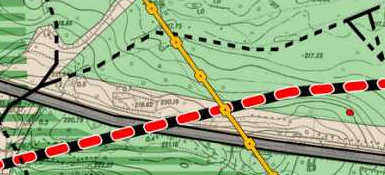
Следы рубежа обороны 100-й стрелковой дивизии сохранились до наших дней,
уцелели остатки одиночных окопов западнее земляной тюрьмы. Цифрой 9 на 3d карте обозначены сохранившиеся остатки землянки,
на плане составленным Институтом истории Национальной академии наук Беларуси, она отмечена красным кружком.
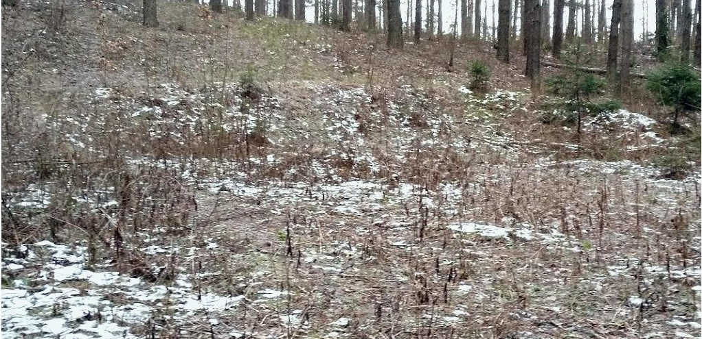
Мишенная ниша в наше время, 2019 год. В разделе "Аэрофотоснимки"
на фото 3. мишенная ниша обозначена цифрой 1.
3-й батальон 331-го стрелкового полка.
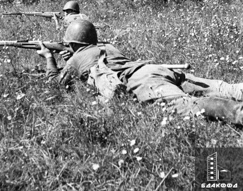
Фрагмент фотоснимка 0-172180 ID номер: F1054492 из коллекции В. И. Аркашева в БГАКФФД
Аннотация БГАКФФД: Воины 100-й стрелковой дивизии Западного фронта во время боёв за г. Минск.
Дата съёмки 25-28.06.1941. Хорошо видно, что красноармейцы ведут огонь из винтовок Токарева и Мосина.
На вооружении у 100-й стрелковой дивизии перед войной были самозарядные винтовки Токарева и винтовки Мосина.
Обе эти винтовки использовали один и тот же винтовочный патрон 7,62x54 мм.
На месте уничтожения немецкого десанта ( См. раздел "100-я дивизия") в 2011 году в ходе предварительного осмотра места
перспективного строительства логистического склада СП ОАО «Спартак» археологами были найдены 11 тупоконечных пуль
от патрона 7,62 х 54,0 мм образца 1891 г. и одна остроконечная пуля от патрона 7,62 х 54,0 мм образца 1908 г.
Гарантированный срок хранения патронов, обычно, составляет 40 лет. С соблюдением условий хранения патроны могут
храниться значительно дольше, не теряя свои боевые свойства. После того, как прошло установленное время хранения
производят контрольный отстрел боеприпасов, по результатам которого этот срок продлевается.
В журнале боевых действий записано : «...100-я ордена Ленина стрелковая дивизия, дислоцировавшаяся
в мирное время в гор. Минск, там же проводила отмобилизование. Явка приписного состава составила 70%, так как большинство
его было на сборах и знало свою часть. Стрелковые полки, проводя отмобилизование, занимали круговую оборону Минска ...
командование дивизии занималось целым рядом других вопросов по эвакуации, обеспечению дивизии боеприпасами, горючим и т. д.
при нарушенном управлении армейскими складами и базами.».
Тысячи минчан, мобилизованные в первые дни войны, получали боеприпасы отдельно от солдат, которые к этому времени уже
были вооружены. После чего они вместе направлялись занимать оборонительные рубежи вокруг столицы. Вот так и получилось,
что благодаря мобилизованному личному составу бойцы одного и того же подразделения были обеспечены патронами из разных
партий.
Зона массовых расстрелов.
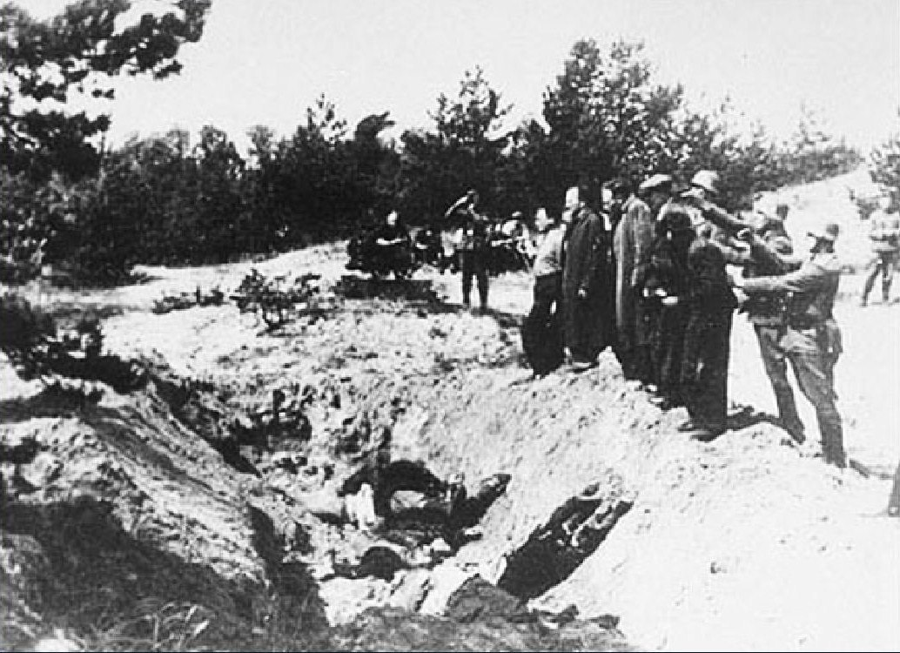
Следствие Г. Тарнавского обнаружило свыше 510 ям-углублений. Впоследствии при проведении раскопок
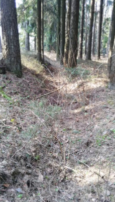
Остатки рва и забора в наше время. 2019 год.
в 1990-х и 2000-х годах исследователи установили, что массовые расстрелы происходили только в районе
вершины холма и прилегающих к нему склонов. Подсвеченным контуром обозначена территория, где происходили массовые
расстрелы. С восточной стороны зона массовых расстрелов ограничена остатками рва и забора.
В пределах этой обозначенной зоны по данным плана, составленным Институтом истории Национальной
академии наук Беларуси, находится около 370 предполагаемых захоронений жертв массовых расстрелов.
Каждое предполагаемое захоронение представляет собой яму-углубление и обозначено красной точкой.
За пределами обозначенной территории захоронений не обнаружено.
Находки 2018 года.
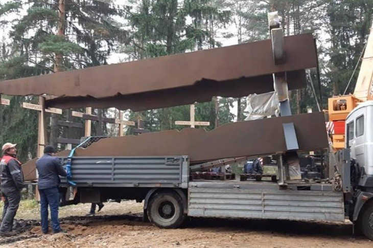
Монтаж памятного знака, 2019 год. Осенью 2018 года в рамках реализации земляных и строительных работ на объекте «Создание и возведение
памятного знака мемориала «Куропаты» и благоустройства прилегающей территории» сотрудниками Института истории НАН Беларуси
были проведены археологические исследования в месте расположения памятного знака, а также археологическое наблюдение за
благоустройством пешеходной дорожки. В ходе раскопок было обнаружено большое количество разнообразных гильз и пуль,
в том числе и гильзы 7,62 х 54.0 мм от винтовки Мосина и немецкие 7,92 х 57,0 мм (Mauser)[1].
Нацисты вооружали советским трофейным оружием полицейские формировании предателей, также каратели были вооружены
стандартным немецким оружием (См. раздел "Гильзы и оружие"). Наличие гильз от патрона к винтовке системы Мосина, с гильзами Mauser в верхних слоях
захоронения является прямым доказательством участия в этих расстрелах полицейских формирований, подчиненных немецкой
оккупационной власти.
В. Ластовский.
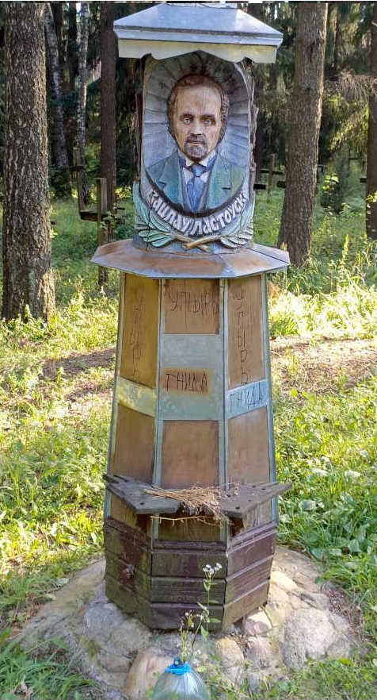
Белорусская националистическая оппозиция в 2016 году у вершины холма установила статуэтку
главы Рады БНР в эмиграции В. Ластовского. В 1927 году Ластовский принял советское гражданство и переехал в Минск,
где занимался научной и литературной деятельностью. В 1931 году был обвинён в участии в деятельности антисоветской
организации «Союза освобождения Беларуси» и был выслан за пределы БССР. После повторного ареста в Саратове
был расстрелян в 1938 году.
Фальсификаторы истории пытаются выставить В. Ластовского как безвинную жертву " сталинского террора ",
и утверждают, что национал-фашистская организация «Союз освобождения Беларуси» это выдумка НКВД.
Немецкие документы свидетельствуют об обратном. В июле 1941года немцы назначили бургомистром Минска белорусского
националиста В. Тумаша. Ему были приданы 30 человек из числа белорусской националистской интеллигенции и ещё "3 надёжных белоруса",
для установления " нового порядка " - организации гетто и массового террора мирного населения.
23 июля 1941 года нацистские кураторы в Оперативной сводке из СССР № 21 айнзатцгруппы «В» с тревогой
сообщили в Берлин:
"Доктору Тумашу и его сотрудникам удалось установить контакты с местными оставшимися здесь бывшими членами белорусского
националистического движения, которое с 1928 года систематически преследовалось и было разгромлено большевиками."[2].
В. В. Данилович В интервью Белорусскому телеграфному агентство (БелТА) незадолго до республиканского субботника 18 апреля 2026 года,
заработанные средства от которого направлены на строительство Национального исторического музея,
заместитель председателя Постоянной комиссии по образованию, культуре и науке Палаты представителей Национального собрания
доктор исторических наук Вячеслав Данилович упомянул Вацлава Ластовского как выдающегося белорусского историка.
Но роль человека оценивают по его основной деятельности. Например, Гитлер известен не как самобытный художник, доведённый
большевиками до самоубийства, а как самый кровавый преступник в истории человечества. Так и В. Ластовский, в первую очередь
один из основателей белорусского национализма. Особый цинизм в том, что идеология белорусского национализма
использовалась предателями для оправдания массовых убийств мирных людей. Такие убийства националисты, совместно с нацистами, проводили
и на вершине холма, где впоследствии националистическая оппозиция водрузила статуэтку В. Ластовского с массонскими знаками,
закамуфлированными псевдохристианской символикой.
Литература:
1. Матэрыялы па археалогіі Беларусі, 2019, № 30 // Урочище Куропаты (Брод) в свете археологических исследований,
В. И. Кошман, с.81.
2. НАРБ, ф. 1440, оп. 3, д. 948, л. 85-86